Last updated: 2026-08-13
Checks: 7 0
Knit directory: SSc-PAH/
This reproducible R Markdown analysis was created with workflowr (version 1.7.2). The Checks tab describes the reproducibility checks that were applied when the results were created. The Past versions tab lists the development history.
Great! Since the R Markdown file has been committed to the Git repository, you know the exact version of the code that produced these results.
Great job! The global environment was empty. Objects defined in the global environment can affect the analysis in your R Markdown file in unknown ways. For reproduciblity it’s best to always run the code in an empty environment.
The command set.seed(20251015) was run prior to running
the code in the R Markdown file. Setting a seed ensures that any results
that rely on randomness, e.g. subsampling or permutations, are
reproducible.
Great job! Recording the operating system, R version, and package versions is critical for reproducibility.
Nice! There were no cached chunks for this analysis, so you can be confident that you successfully produced the results during this run.
Great job! Using relative paths to the files within your workflowr project makes it easier to run your code on other machines.
Great! You are using Git for version control. Tracking code development and connecting the code version to the results is critical for reproducibility.
The results in this page were generated with repository version ddc0dfe. See the Past versions tab to see a history of the changes made to the R Markdown and HTML files.
Note that you need to be careful to ensure that all relevant files for
the analysis have been committed to Git prior to generating the results
(you can use wflow_publish or
wflow_git_commit). workflowr only checks the R Markdown
file, but you know if there are other scripts or data files that it
depends on. Below is the status of the Git repository when the results
were generated:
Ignored files:
Ignored: .RData
Ignored: .Rhistory
Ignored: .Rproj.user/
Untracked files:
Untracked: analysis/Olink_RV_dysf.Rmd
Untracked: analysis/Olink_RV_dysf_PL.Rmd
Untracked: analysis/SSc_PAH_serum_proteomics_significant_candidates.Rmd
Untracked: analysis/SSc_PAH_two_protein_panel_test.Rmd
Untracked: analysis/VennDiagram.2025-10-16_12-40-35.351562.log
Untracked: analysis/VennDiagram.2025-10-22_22-26-15.195599.log
Untracked: analysis/VennDiagram.2025-10-24_20-43-26.101506.log
Untracked: analysis/VennDiagram.2025-10-24_20-54-12.491858.log
Untracked: analysis/VennDiagram.2025-10-30_20-49-49.773885.log
Untracked: analysis/VennDiagram.2025-10-30_20-58-01.820025.log
Untracked: analysis/VennDiagram.2025-10-30_21-01-21.178598.log
Untracked: analysis/omnipathr-log/
Untracked: data/322591_DEA_Serum_ENRICH-iST_C37202WU322591.xlsx
Untracked: data/Cohorts_comparison.xlsx
Untracked: data/Cohorts_comparison_2.xlsx
Untracked: data/DE_Groups_vs_Controls.xlsx
Untracked: data/Metadata_Olink_analysis.xlsx
Untracked: data/OLINK_PL/
Untracked: data/P2024-199-OLI_80_NPX_2024-10-10.parquet
Untracked: data/Plasma_ENRICHPlus_o37198_o37202_integrated_SummarizedExperiment.qs2
Untracked: data/Plasma_Urea_o37198_o37202_integrated_SummarizedExperiment.qs2
Untracked: data/Serum_ENRICHiST_o37198_o37202_integrated_SummarizedExperiment.qs2
Untracked: data/Serum_Urea_o37198_o37202_integrated_SummarizedExperiment.qs2
Untracked: data/Zurich_47_PAH_RHC_sample_list_CB040723_CLINICAL DATA_update20240109.xlsx
Untracked: data/o37198_2025-02-27_olink_SummarizedExperiment.qs2
Untracked: omnipathr-log/
Untracked: output/Olink_2_cohorts/
Untracked: output/Olink_2_cohorts_2/
Untracked: output/Olink_RV_dysf/
Untracked: output/Olink_RV_dysf_PL/
Untracked: output/SSc_PAH_serum_proteomics/
Untracked: output/SSc_PAH_serum_proteomics_final/
Untracked: output/SSc_PAH_serum_proteomics_significant_candidates/
Untracked: output/SSc_PAH_serum_proteomics_significant_candidates_k4/
Untracked: output/SSc_PAH_serum_proteomics_top50_k5_3year_final/
Untracked: output/SSc_PAH_two_protein_panel_test/
Untracked: output/check_Olink_PL/
Untracked: renv.lock
Untracked: renv/
Unstaged changes:
Modified: .Rprofile
Note that any generated files, e.g. HTML, png, CSS, etc., are not included in this status report because it is ok for generated content to have uncommitted changes.
These are the previous versions of the repository in which changes were
made to the R Markdown
(analysis/SSc_PAH_serum_proteomics.Rmd) and HTML
(docs/SSc_PAH_serum_proteomics.html) files. If you’ve
configured a remote Git repository (see ?wflow_git_remote),
click on the hyperlinks in the table below to view the files as they
were in that past version.
| File | Version | Author | Date | Message |
|---|---|---|---|---|
| Rmd | ddc0dfe | GinoBonazza | 2026-08-13 | wflow_publish("analysis/SSc_PAH_serum_proteomics.Rmd") |
Setup
current_file <- "SSc_PAH_serum_proteomics"
library(here)
library(readr)
library(readxl)
library(dplyr)
library(tidyr)
library(tibble)
library(ggplot2)
library(scales)
library(patchwork)
library(qs2)
library(SummarizedExperiment)
library(limma)
library(EnhancedVolcano)
library(glmnet)
library(pROC)
library(pheatmap)
library(survival)
library(broom)
library(grid)
output_dir_data <- here::here("output", current_file)
if (!dir.exists(output_dir_data)) dir.create(output_dir_data, recursive = TRUE)
if (!dir.exists(here::here("docs", "figure"))) dir.create(here::here("docs", "figure"), recursive = TRUE)
output_dir_figs <- here::here("docs", "figure", paste0(current_file, ".Rmd"))
if (!dir.exists(output_dir_figs)) dir.create(output_dir_figs, recursive = TRUE)
cols_group <- c("SSc-noPAH" = "#004C8C", "SSc-PAH" = "#A63A2A")
cols_cohort <- c("Zurich" = "#004C8C", "Poland" = "#A63A2A")
cols_tapse <- c("Preserved" = "#8AA6B8", "Impaired" = "#A63A2A")
cols_compera <- c("low" = "#9CA3AF", "intermediate-low" = "#DDB7B2", "intermediate-high" = "#C7685F", "high" = "#A63A2A")
standardize_compera <- function(x){
x <- tolower(trimws(as.character(x)))
dplyr::case_when(
x == "low" ~ "low",
x %in% c("intermediate-low", "intermediate low", "intermediate_low") ~ "intermediate-low",
x %in% c("intermediate-high", "intermediate high", "intermediate_high") ~ "intermediate-high",
x == "high" ~ "high",
TRUE ~ NA_character_
)
}
as_date_safe <- function(x){
if (inherits(x, "Date")) return(x)
if (inherits(x, c("POSIXct", "POSIXt"))) return(as.Date(x))
if (is.numeric(x)) return(as.Date(x, origin = "1899-12-30"))
out <- suppressWarnings(as.Date(x))
bad <- is.na(out) & !is.na(x)
if (any(bad)) out[bad] <- suppressWarnings(as.Date(x[bad], format = "%d.%m.%Y"))
out
}Import data
data_z_se <- qs_read(here::here("data", "o37198_2025-02-27_olink_SummarizedExperiment.qs2"))
clin_z <- read_excel(here::here("data", "Metadata_Olink_analysis.xlsx"), sheet = "Merged")
meta_z_olink <- colData(data_z_se) %>% data.frame()
isOutlierColumn <- meta_z_olink$Plate == "P0194" & meta_z_olink$Col %in% c("3", "4")
use <- meta_z_olink$SampleType %in% "Serum" & meta_z_olink$Group %in% c("SSc-PAH", "SSc-noPAH") & !isOutlierColumn
data_z_se <- data_z_se[, use]
meta_z_olink <- meta_z_olink[use, ]
rownames(meta_z_olink) <- gsub("_P0194", "", rownames(meta_z_olink))
meta_z_olink$Barcode <- rownames(meta_z_olink)
rownames(data_z_se) <- data_z_se@elementMetadata@listData[["Gene"]]
rownames(data_z_se@assays@data@listData[["npx"]]) <- data_z_se@elementMetadata@listData[["Gene"]]
data_z <- assay(data_z_se, "npx")
data_z <- as.data.frame(data_z[-c(1:3), ])
colnames(data_z) <- rownames(meta_z_olink)
clin_z <- clin_z %>%
dplyr::filter(Barcode %in% colnames(data_z)) %>%
dplyr::distinct(Barcode, .keep_all = TRUE)
data_p <- read.delim(here::here("data", "OLINK_PL", "quant.xls"), sep = "\t", check.names = FALSE)
clin_p <- read_excel(here::here("data", "OLINK_PL", "Metadata_Olink_PL.xlsx"), sheet = "Metadata")
rownames(data_p) <- sub("_.*", "", data_p$SampleID)
data_p <- data_p[, -1]
keep <- intersect(colnames(data_p), clin_p$Barcode)
data_p <- data_p[, keep, drop = FALSE]
clin_p <- clin_p %>%
dplyr::filter(Barcode %in% colnames(data_p)) %>%
dplyr::distinct(Barcode, .keep_all = TRUE)
cat("Zurich Olink matrix:", dim(data_z), "\n")Zurich Olink matrix: 1034 68 print(table(clin_z$Group))
SSc-noPAH SSc-PAH
37 31 cat("Poland Olink matrix:", dim(data_p), "\n")Poland Olink matrix: 1034 73 print(table(clin_p$Group))
SSc-noPAH SSc-PAH
35 38 cat("Missing NPX values Zurich:", sum(is.na(data_z)), "\n")Missing NPX values Zurich: 0 cat("Missing NPX values Poland:", sum(is.na(data_p)), "\n")Missing NPX values Poland: 0 cat("Duplicated protein names Zurich:", anyDuplicated(rownames(data_z)), "\n")Duplicated protein names Zurich: 0 cat("Duplicated protein names Poland:", anyDuplicated(rownames(data_p)), "\n")Duplicated protein names Poland: 0 Harmonize metadata
if ("DETECT_step2 " %in% colnames(clin_z)) names(clin_z)[names(clin_z) == "DETECT_step2 "] <- "DETECT_step2"
clin_z <- clin_z %>%
mutate(
Cohort = "Zurich",
Age = as.numeric(Age), Sex = factor(Sex), TAPSE_sPAP = as.numeric(TAPSE_sPAP),
Sample_date_analysis = as_date_safe(`Sample date`), RHC_date_analysis = as_date_safe(RHC_date),
Sample_minus_RHC_days = as.numeric(Sample_date_analysis - RHC_date_analysis),
Sample_RHC_abs_days = abs(Sample_minus_RHC_days),
COMPERA = standardize_compera(COMPERA_4strata), COMPERA_number_common = as.numeric(COMPERA_number),
SixMWD = as.numeric(`6_Minute_walk_test_distance.in.m`), NTproBNP_common = as.numeric(NTproBNP_pg.ml),
WHO_FC = as.numeric(`NYHA class`), TAPSE = as.numeric(TAPSE_mm), sPAP = as.numeric(sPAP_ECHO),
mPAP = as.numeric(mPAP_mmHg), PCWP = as.numeric(Pulmonary_wedge_pressure_mmHg), PVR = as.numeric(PVR_WU),
CI = as.numeric(Cardiac_Index_L.min.m2), Creatinine_mg_dl = as.numeric(Creatinine),
ILD_common = tolower(trimws(as.character(ILDonHRCT))), FVC_pred_common = as.numeric(FVC),
DLCO_pred_common = as.numeric(Dlco), mRSS_common = as.numeric(mRSS), DETECT_score = as.numeric(DETECT_step2)
)
clin_p <- clin_p %>%
mutate(
Cohort = "Poland",
Age = as.numeric(Age), Sex = factor(Sex), TAPSE_sPAP = as.numeric(TAPSE_sPAP),
Sample_date_analysis = as_date_safe(Sample_date), RHC_date_analysis = as_date_safe(RHC_date),
Sample_minus_RHC_days = as.numeric(Sample_date_analysis - RHC_date_analysis),
Sample_RHC_abs_days = abs(Sample_minus_RHC_days),
COMPERA = standardize_compera(Compera_4strata), COMPERA_number_common = as.numeric(Compera_number),
SixMWD = as.numeric(`6MWT`), NTproBNP_common = as.numeric(NTproBNP), WHO_FC = as.numeric(NYHA),
TAPSE = as.numeric(TAPSE),
# Polish TAPSE/sPAP is calculated using RVSP + RAP.
sPAP = as.numeric(RVSP) + as.numeric(RAP),
mPAP = as.numeric(mPAP), PCWP = as.numeric(PCWP), PVR = as.numeric(PVR_WU), CI = as.numeric(CI),
Creatinine_mg_dl = as.numeric(Creatinine_mg_dL), ILD_common = tolower(trimws(as.character(ILD))),
FVC_pred_common = as.numeric(FVC_pred), DLCO_pred_common = as.numeric(DLCO_pred), mRSS_common = as.numeric(mRSS)
)
clin_z$COMPERA <- factor(clin_z$COMPERA, levels = c("low", "intermediate-low", "intermediate-high", "high"))
clin_p$COMPERA <- factor(clin_p$COMPERA, levels = c("low", "intermediate-low", "intermediate-high", "high"))
# S319 TAPSE was entered as 181 instead of 18.1 mm
clin_p$TAPSE[clin_p$Barcode == "S319"] <- 18.1
clin_p$TAPSE_sPAP[clin_p$Barcode == "S319"] <- 18.1 / clin_p$sPAP[clin_p$Barcode == "S319"]
common_proteins <- intersect(rownames(data_p), rownames(data_z))
cat("Proteins measured in both cohorts:", length(common_proteins), "\n")Proteins measured in both cohorts: 1027 Define analysis populations
z_all <- clin_z %>% filter(Barcode %in% colnames(data_z))
p_all <- clin_p %>% filter(Barcode %in% colnames(data_p))
z_pah <- z_all %>% filter(Group == "SSc-PAH")
z_nopah <- z_all %>% filter(Group == "SSc-noPAH")
p_pah <- p_all %>% filter(Group == "SSc-PAH")
p_nopah <- p_all %>% filter(Group == "SSc-noPAH")
z_pah_tapse <- z_pah %>% filter(!is.na(TAPSE_sPAP)) %>% mutate(TAPSE_group = ifelse(TAPSE_sPAP <= 0.32, "Impaired", "Preserved"))
p_pah_tapse <- p_pah %>% filter(!is.na(TAPSE_sPAP)) %>% mutate(TAPSE_group = ifelse(TAPSE_sPAP <= 0.32, "Impaired", "Preserved"))
z_pah_tapse$TAPSE_group <- factor(z_pah_tapse$TAPSE_group, levels = c("Preserved", "Impaired"))
p_pah_tapse$TAPSE_group <- factor(p_pah_tapse$TAPSE_group, levels = c("Preserved", "Impaired"))
cat("Zurich SSc-PAH with TAPSE/sPAP:\n")Zurich SSc-PAH with TAPSE/sPAP:print(table(z_pah_tapse$TAPSE_group))
Preserved Impaired
20 6 cat("Poland SSc-PAH with TAPSE/sPAP:\n")Poland SSc-PAH with TAPSE/sPAP:print(table(p_pah_tapse$TAPSE_group))
Preserved Impaired
14 24 Cohort characteristics and QC
Table 1
fmt_cont <- function(x, digits = 1){
x <- as.numeric(x)
x <- x[is.finite(x)]
if (length(x) == 0) return("-")
paste0(formatC(median(x), digits = digits, format = "f"), " [",
formatC(quantile(x, 0.25), digits = digits, format = "f"), "–",
formatC(quantile(x, 0.75), digits = digits, format = "f"), "], n=", length(x))
}
fmt_binary <- function(x, positive = "yes"){
x <- tolower(trimws(as.character(x)))
x <- x[!is.na(x) & x != ""]
if (length(x) == 0) return("-")
npos <- sum(x %in% positive)
paste0(npos, " (", round(100 * npos / length(x), 1), "%), n=", length(x))
}
fmt_female <- function(x){
x <- toupper(trimws(as.character(x)))
x <- x[!is.na(x) & x != ""]
if (length(x) == 0) return("-")
npos <- sum(x == "F")
paste0(npos, " (", round(100 * npos / length(x), 1), "%), n=", length(x))
}
fmt_compera <- function(x, level){
x <- as.character(x)
x <- x[!is.na(x)]
if (length(x) == 0) return("-")
nlevel <- sum(x == level)
paste0(nlevel, " (", round(100 * nlevel / length(x), 1), "%), n=", length(x))
}
make_table1_column <- function(df){
c(
fmt_cont(df$Age, 0),
fmt_female(df$Sex),
fmt_cont(df$BMI, 1),
fmt_binary(df$ILD_common, "yes"),
fmt_cont(df$FVC_pred_common, 0),
fmt_cont(df$DLCO_pred_common, 0),
fmt_cont(df$Creatinine_mg_dl, 2),
fmt_cont(df$WHO_FC, 0),
fmt_cont(df$SixMWD, 0),
fmt_cont(df$NTproBNP_common, 0),
fmt_cont(df$TAPSE, 1),
fmt_cont(df$sPAP, 1),
fmt_cont(df$TAPSE_sPAP, 2),
fmt_cont(df$mPAP, 1),
fmt_cont(df$PCWP, 1),
fmt_cont(df$PVR, 1),
fmt_cont(df$CI, 2),
fmt_compera(df$COMPERA, "low"),
fmt_compera(df$COMPERA, "intermediate-low"),
fmt_compera(df$COMPERA, "intermediate-high"),
fmt_compera(df$COMPERA, "high"),
fmt_cont(df$Sample_RHC_abs_days, 0)
)
}
table1 <- data.frame(
Characteristic = c(
"Age, years", "Female, n (%)", "BMI, kg/m2", "ILD, n (%)", "FVC, % predicted", "DLCO, % predicted",
"Creatinine, mg/dL", "WHO functional class", "6-minute walk distance, m", "NT-proBNP, pg/mL",
"TAPSE, mm", "sPAP, mmHg", "TAPSE/sPAP", "mPAP, mmHg", "PCWP, mmHg", "PVR, WU", "Cardiac index, L/min/m2",
"COMPERA low", "COMPERA intermediate-low", "COMPERA intermediate-high", "COMPERA high", "Absolute sample-RHC interval, days"
),
Zurich_noPAH = make_table1_column(z_nopah),
Zurich_PAH = make_table1_column(z_pah),
Poland_noPAH = make_table1_column(p_nopah),
Poland_PAH = make_table1_column(p_pah),
check.names = FALSE
)
colnames(table1)[2:5] <- c(
paste0("Zurich SSc-noPAH (n=", nrow(z_nopah), ")"),
paste0("Zurich SSc-PAH (n=", nrow(z_pah), ")"),
paste0("Poland SSc-noPAH (n=", nrow(p_nopah), ")"),
paste0("Poland SSc-PAH (n=", nrow(p_pah), ")")
)
write.csv(table1, here::here(output_dir_data, "Table1_clinical_characteristics.csv"), row.names = FALSE)
knitr::kable(table1, align = c("l", "c", "c", "c", "c"))| Characteristic | Zurich SSc-noPAH (n=37) | Zurich SSc-PAH (n=31) | Poland SSc-noPAH (n=35) | Poland SSc-PAH (n=38) |
|---|---|---|---|---|
| Age, years | 60 [49–66], n=37 | 65 [58–72], n=31 | 57 [52–64], n=35 | 72 [62–74], n=38 |
| Female, n (%) | 31 (83.8%), n=37 | 25 (80.6%), n=31 | 26 (74.3%), n=35 | 22 (57.9%), n=38 |
| BMI, kg/m2 | 22.8 [21.2–28.0], n=34 | 25.8 [21.7–30.6], n=27 | - | 25.5 [22.8–30.1], n=32 |
| ILD, n (%) | 12 (32.4%), n=37 | 18 (58.1%), n=31 | - | 16 (45.7%), n=35 |
| FVC, % predicted | 69 [50–87], n=37 | 68 [42–92], n=30 | - | 80 [73–88], n=33 |
| DLCO, % predicted | 87 [64–104], n=37 | 58 [43–89], n=30 | - | 40 [31–47], n=31 |
| Creatinine, mg/dL | 0.90 [0.70–0.90], n=37 | 0.90 [0.70–1.18], n=30 | - | 0.97 [0.84–1.10], n=35 |
| WHO functional class | 2 [2–2], n=37 | 2 [2–3], n=30 | 2 [1–2], n=35 | 3 [3–3], n=38 |
| 6-minute walk distance, m | 525 [444–568], n=37 | 435 [398–478], n=28 | 460 [396–494], n=7 | 276 [126–390], n=37 |
| NT-proBNP, pg/mL | 162 [97–419], n=37 | 173 [102–886], n=31 | 305 [217–854], n=15 | 1938 [341–3667], n=38 |
| TAPSE, mm | 21.0 [18.0–23.5], n=36 | 18.5 [15.0–21.0], n=28 | 23.0 [21.0–25.0], n=35 | 18.0 [15.2–22.8], n=38 |
| sPAP, mmHg | 25.5 [23.0–32.0], n=36 | 38.0 [32.0–54.0], n=29 | 29.0 [25.0–36.5], n=31 | 68.0 [63.0–75.8], n=38 |
| TAPSE/sPAP | 0.72 [0.57–0.98], n=35 | 0.55 [0.35–0.65], n=26 | 0.75 [0.61–0.94], n=31 | 0.25 [0.18–0.35], n=38 |
| mPAP, mmHg | 18.0 [15.0–20.0], n=37 | 27.0 [23.0–34.5], n=31 | - | 36.0 [29.0–45.5], n=35 |
| PCWP, mmHg | 9.0 [8.0–11.0], n=37 | 10.0 [8.0–13.0], n=31 | - | 9.0 [7.2–12.8], n=34 |
| PVR, WU | 1.4 [1.2–1.7], n=34 | 3.0 [2.4–4.6], n=27 | - | 6.6 [3.7–8.6], n=34 |
| Cardiac index, L/min/m2 | 3.20 [2.70–3.60], n=33 | 3.05 [2.82–3.60], n=26 | - | 2.58 [2.10–2.84], n=35 |
| COMPERA low | - | 10 (32.3%), n=31 | - | 3 (7.9%), n=38 |
| COMPERA intermediate-low | - | 7 (22.6%), n=31 | - | 9 (23.7%), n=38 |
| COMPERA intermediate-high | - | 6 (19.4%), n=31 | - | 15 (39.5%), n=38 |
| COMPERA high | - | 8 (25.8%), n=31 | - | 11 (28.9%), n=38 |
| Absolute sample-RHC interval, days | 38 [6–135], n=37 | 31 [1–64], n=31 | - | 4 [1–164], n=35 |
NPX distributions
order_z <- z_all %>% arrange(Group, Barcode) %>% pull(Barcode)
npx_long_z <- data_z %>%
as.data.frame() %>%
rownames_to_column("Protein") %>%
pivot_longer(-Protein, names_to = "Barcode", values_to = "NPX") %>%
left_join(z_all %>% select(Barcode, Group), by = "Barcode") %>%
mutate(Barcode = factor(Barcode, levels = order_z))
p_npx_z <- ggplot(npx_long_z, aes(Barcode, NPX, fill = Group)) +
geom_boxplot(outlier.shape = NA, linewidth = 0.25) +
scale_fill_manual(values = cols_group) +
labs(title = "Zurich cohort", x = NULL, y = "NPX") +
theme_classic(base_size = 11) +
theme(axis.text.x = element_text(angle = 90, hjust = 1, size = 5), legend.position = "top")
p_npx_z
ggsave(here::here(output_dir_figs, "QC_NPX_distribution_Zurich.png"), p_npx_z, width = 11, height = 5.2, dpi = 300)order_p <- p_all %>% arrange(Group, Barcode) %>% pull(Barcode)
npx_long_p <- data_p %>%
as.data.frame() %>%
rownames_to_column("Protein") %>%
pivot_longer(-Protein, names_to = "Barcode", values_to = "NPX") %>%
left_join(p_all %>% select(Barcode, Group), by = "Barcode") %>%
mutate(Barcode = factor(Barcode, levels = order_p))
p_npx_p <- ggplot(npx_long_p, aes(Barcode, NPX, fill = Group)) +
geom_boxplot(outlier.shape = NA, linewidth = 0.25) +
scale_fill_manual(values = cols_group) +
labs(title = "Poland cohort", x = NULL, y = "NPX") +
theme_classic(base_size = 11) +
theme(axis.text.x = element_text(angle = 90, hjust = 1, size = 5), legend.position = "top")
p_npx_p
ggsave(here::here(output_dir_figs, "QC_NPX_distribution_Poland.png"), p_npx_p, width = 11, height = 5.2, dpi = 300)PCA
sd_pca_z <- apply(data_z, 1, sd, na.rm = TRUE)
data_z_pca <- data_z[is.finite(sd_pca_z) & sd_pca_z > 0, , drop = FALSE]
pca_z <- prcomp(t(as.matrix(data_z_pca)), center = TRUE, scale. = TRUE)
var_z <- 100 * pca_z$sdev^2 / sum(pca_z$sdev^2)
pca_z_df <- data.frame(Barcode = rownames(pca_z$x), PC1 = pca_z$x[, 1], PC2 = pca_z$x[, 2]) %>%
left_join(z_all %>% select(Barcode, Group, COMPERA), by = "Barcode")
p_pca_z <- ggplot(pca_z_df, aes(PC1, PC2, color = Group)) +
geom_point(size = 2.2, alpha = 0.85) +
scale_color_manual(values = cols_group) +
labs(title = "Zurich cohort", x = paste0("PC1 (", round(var_z[1], 1), "%)"), y = paste0("PC2 (", round(var_z[2], 1), "%)")) +
theme_classic(base_size = 11)
p_pca_z
ggsave(here::here(output_dir_figs, "QC_PCA_Zurich_group.png"), p_pca_z, width = 5.2, height = 4.2, dpi = 300)sd_pca_p <- apply(data_p, 1, sd, na.rm = TRUE)
data_p_pca <- data_p[is.finite(sd_pca_p) & sd_pca_p > 0, , drop = FALSE]
pca_p <- prcomp(t(as.matrix(data_p_pca)), center = TRUE, scale. = TRUE)
var_p <- 100 * pca_p$sdev^2 / sum(pca_p$sdev^2)
pca_p_df <- data.frame(Barcode = rownames(pca_p$x), PC1 = pca_p$x[, 1], PC2 = pca_p$x[, 2]) %>%
left_join(p_all %>% select(Barcode, Group, COMPERA), by = "Barcode")
p_pca_p <- ggplot(pca_p_df, aes(PC1, PC2, color = Group)) +
geom_point(size = 2.2, alpha = 0.85) +
scale_color_manual(values = cols_group) +
labs(title = "Poland cohort", x = paste0("PC1 (", round(var_p[1], 1), "%)"), y = paste0("PC2 (", round(var_p[2], 1), "%)")) +
theme_classic(base_size = 11)
p_pca_p
ggsave(here::here(output_dir_figs, "QC_PCA_Poland_group.png"), p_pca_p, width = 5.2, height = 4.2, dpi = 300)p_pca_z_compera <- pca_z_df %>% filter(Group == "SSc-PAH", !is.na(COMPERA)) %>%
ggplot(aes(PC1, PC2, color = COMPERA)) + geom_point(size = 2.4) + scale_color_manual(values = cols_compera) +
labs(title = "Zurich SSc-PAH", x = paste0("PC1 (", round(var_z[1], 1), "%)"), y = paste0("PC2 (", round(var_z[2], 1), "%)")) + theme_classic(base_size = 11)
p_pca_p_compera <- pca_p_df %>% filter(Group == "SSc-PAH", !is.na(COMPERA)) %>%
ggplot(aes(PC1, PC2, color = COMPERA)) + geom_point(size = 2.4) + scale_color_manual(values = cols_compera) +
labs(title = "Poland SSc-PAH", x = paste0("PC1 (", round(var_p[1], 1), "%)"), y = paste0("PC2 (", round(var_p[2], 1), "%)")) + theme_classic(base_size = 11)
p_pca_z_compera + p_pca_p_compera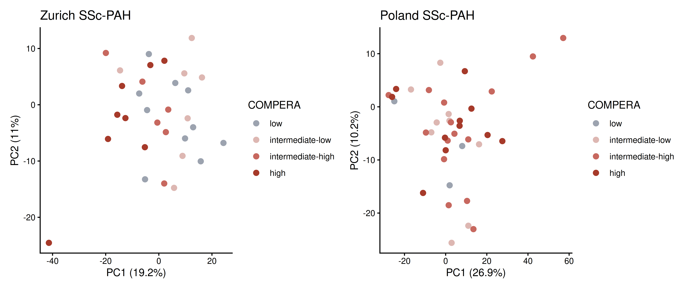
ggsave(here::here(output_dir_figs, "QC_PCA_COMPERA_both_cohorts.png"), p_pca_z_compera + p_pca_p_compera, width = 10, height = 4.2, dpi = 300)Sample-RHC interval
rhc_interval_df <- bind_rows(
z_all %>% transmute(Barcode, Cohort = "Zurich", Group, days = Sample_RHC_abs_days),
p_all %>% transmute(Barcode, Cohort = "Poland", Group, days = Sample_RHC_abs_days)
) %>% filter(!is.na(days))
rhc_interval_summary <- rhc_interval_df %>% group_by(Cohort) %>%
summarise(n = n(), median = median(days), q1 = quantile(days, 0.25), q3 = quantile(days, 0.75), min = min(days), max = max(days), .groups = "drop")
rhc_interval_summary# A tibble: 2 × 7
Cohort n median q1 q3 min max
<chr> <int> <dbl> <dbl> <dbl> <dbl> <dbl>
1 Poland 35 4 1 164 0 876
2 Zurich 68 34.5 1 107. 0 484write.csv(rhc_interval_summary, here::here(output_dir_data, "Sample_RHC_interval_summary.csv"), row.names = FALSE)
p_rhc_interval <- ggplot(rhc_interval_df, aes(Cohort, days, fill = Cohort)) +
geom_boxplot(outlier.shape = NA, width = 0.5, alpha = 0.75) + geom_jitter(width = 0.12, size = 1.6, alpha = 0.7) +
scale_fill_manual(values = cols_cohort) + labs(x = NULL, y = "Absolute interval between serum collection and RHC (days)") +
theme_classic(base_size = 11) + theme(legend.position = "none")
p_rhc_interval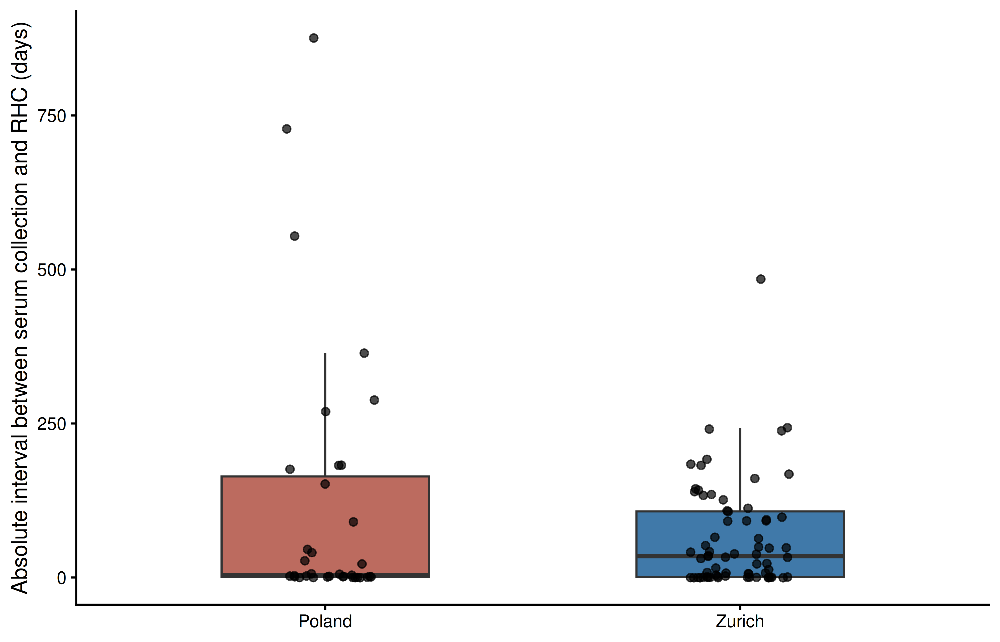
ggsave(here::here(output_dir_figs, "QC_Sample_RHC_interval.png"), p_rhc_interval, width = 7, height = 4.5, dpi = 300)Cohort severity
tapse_cohort_df <- bind_rows(
z_pah %>% transmute(Cohort = "Zurich", TAPSE_sPAP),
p_pah %>% transmute(Cohort = "Poland", TAPSE_sPAP)
) %>% filter(!is.na(TAPSE_sPAP))
p_tapse_cohort <- ggplot(tapse_cohort_df, aes(Cohort, TAPSE_sPAP, fill = Cohort)) +
geom_hline(yintercept = 0.32, linetype = 2, linewidth = 0.5) + geom_boxplot(outlier.shape = NA, alpha = 0.75) +
geom_jitter(width = 0.12, size = 1.8, alpha = 0.75) + scale_fill_manual(values = cols_cohort) +
labs(x = NULL, y = "TAPSE/sPAP") + theme_classic(base_size = 11) + theme(legend.position = "none")
compera_counts <- bind_rows(
z_pah %>% transmute(Cohort = "Zurich", COMPERA),
p_pah %>% transmute(Cohort = "Poland", COMPERA)
) %>% filter(!is.na(COMPERA)) %>% dplyr::count(Cohort, COMPERA, .drop = FALSE)
p_compera_counts <- ggplot(compera_counts, aes(COMPERA, n, fill = COMPERA)) +
geom_col(width = 0.8) + geom_text(aes(label = n), vjust = -0.25, size = 3.6) + facet_wrap(~Cohort, nrow = 1) +
scale_fill_manual(values = cols_compera, drop = FALSE) + labs(x = "COMPERA risk stratum", y = "Patients") +
theme_classic(base_size = 11) + theme(legend.position = "none", axis.text.x = element_text(angle = 30, hjust = 1))
p_tapse_cohort + p_compera_counts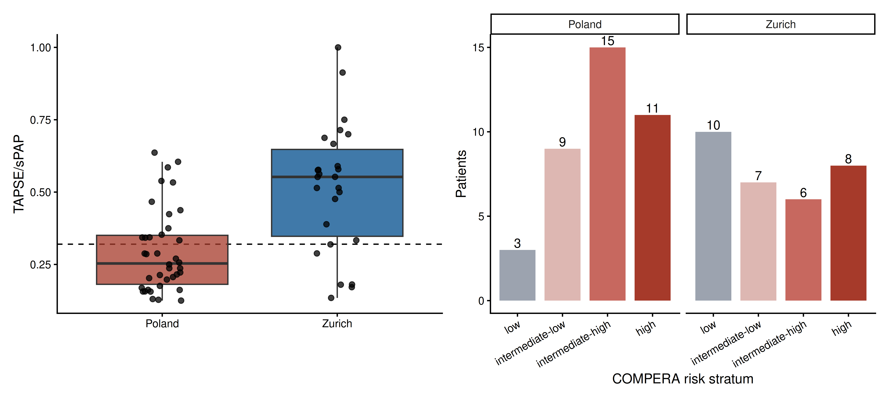
ggsave(here::here(output_dir_figs, "Figure1_cohort_severity_panels.png"), p_tapse_cohort + p_compera_counts, width = 10, height = 4.5, dpi = 300)workflow_labels <- data.frame(
x = c(1, 3, 5, 7), y = c(1, 1, 1, 1),
label = c(
paste0("Zurich\n", nrow(z_all), " SSc patients\n", nrow(z_nopah), " noPAH / ", nrow(z_pah), " PAH"),
paste0("Poland\n", nrow(p_all), " SSc patients\n", nrow(p_nopah), " noPAH / ", nrow(p_pah), " PAH"),
paste0("Olink REVEAL\n", length(common_proteins), " proteins"),
"PAH screening + RV-PA coupling\nPanel development and validation"
)
)
p_workflow <- ggplot(workflow_labels, aes(x, y, label = label)) +
geom_label(size = 4, label.size = 0.35, label.padding = unit(0.5, "lines"), fill = "white") +
geom_segment(data = data.frame(x = c(1.55, 3.55, 5.55), xend = c(2.45, 4.45, 6.45), y = 1, yend = 1),
aes(x = x, xend = xend, y = y, yend = yend), inherit.aes = FALSE, arrow = grid::arrow(length = unit(0.15, "inches"))) +
xlim(0.2, 7.8) + ylim(0.4, 1.6) + theme_void()
Figure1 <- p_workflow / (p_tapse_cohort | p_compera_counts) + plot_layout(heights = c(0.8, 1.4)) + plot_annotation(tag_levels = "A")
Figure1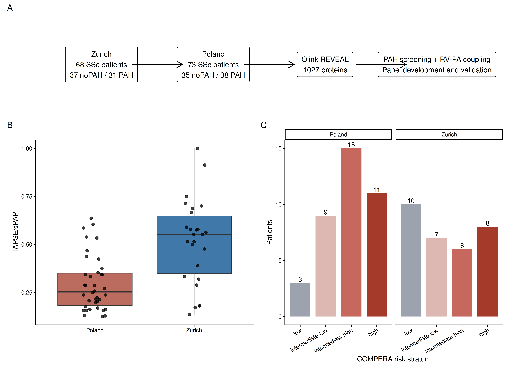
ggsave(here::here(output_dir_figs, "Figure1_study_overview.png"), Figure1, width = 11, height = 8, dpi = 300)Age and sex across TAPSE/sPAP groups
tapse_group_clin <- bind_rows(
z_pah_tapse %>% transmute(Cohort = "Zurich", TAPSE_group, Age, Sex),
p_pah_tapse %>% transmute(Cohort = "Poland", TAPSE_group, Age, Sex)
)
tapse_group_summary <- tapse_group_clin %>% group_by(Cohort, TAPSE_group) %>% summarise(
n = n(), age_median = median(Age, na.rm = TRUE), age_q1 = quantile(Age, 0.25, na.rm = TRUE), age_q3 = quantile(Age, 0.75, na.rm = TRUE),
female_n = sum(toupper(as.character(Sex)) == "F", na.rm = TRUE), sex_n = sum(!is.na(Sex)), .groups = "drop"
) %>% mutate(female_percent = 100 * female_n / sex_n)
tapse_group_summary# A tibble: 4 × 9
Cohort TAPSE_group n age_median age_q1 age_q3 female_n sex_n
<chr> <fct> <int> <dbl> <dbl> <dbl> <int> <int>
1 Poland Preserved 14 71 63 72.8 7 14
2 Poland Impaired 24 72.5 61.8 74.2 15 24
3 Zurich Preserved 20 66 59.8 72 16 20
4 Zurich Impaired 6 68 63.2 75 5 6
# ℹ 1 more variable: female_percent <dbl>write.csv(tapse_group_summary, here::here(output_dir_data, "TAPSE_group_age_sex_summary.csv"), row.names = FALSE)
p_tapse_age <- ggplot(tapse_group_clin, aes(TAPSE_group, Age, fill = TAPSE_group)) + geom_boxplot(outlier.shape = NA, alpha = 0.75) +
geom_jitter(width = 0.12, size = 1.5, alpha = 0.7) + facet_wrap(~Cohort) + scale_fill_manual(values = cols_tapse) +
labs(x = NULL, y = "Age, years") + theme_classic(base_size = 11) + theme(legend.position = "none")
p_tapse_sex <- tapse_group_summary %>% ggplot(aes(TAPSE_group, female_percent, fill = TAPSE_group)) + geom_col(width = 0.7) +
geom_text(aes(label = paste0(female_n, "/", sex_n)), vjust = -0.3, size = 3.5) + facet_wrap(~Cohort) +
scale_fill_manual(values = cols_tapse) + coord_cartesian(ylim = c(0, 105)) + labs(x = NULL, y = "Female, %") +
theme_classic(base_size = 11) + theme(legend.position = "none")
p_tapse_age | p_tapse_sex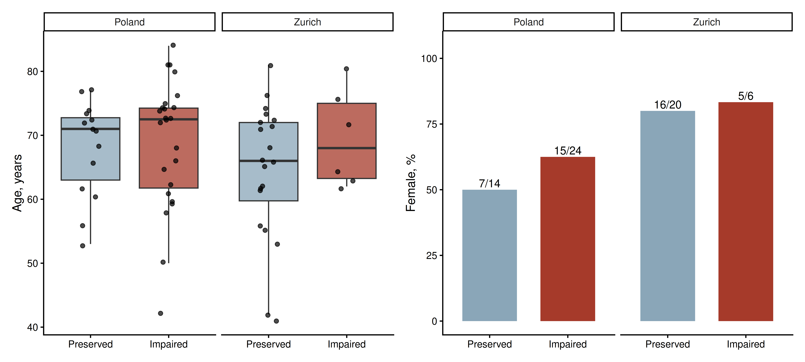
ggsave(here::here(output_dir_figs, "Supplement_TAPSE_group_age_sex.png"), p_tapse_age | p_tapse_sex, width = 10, height = 4.5, dpi = 300)Aim 1: PAH diagnosis and DETECT
SSc-PAH vs SSc-noPAH - Zurich
meta_z_group <- z_all %>%
filter(!is.na(Group), !is.na(Age), !is.na(Sex)) %>%
mutate(Group = factor(Group, levels = c("SSc-noPAH", "SSc-PAH")), Age_z = as.numeric(scale(Age))) %>%
column_to_rownames("Barcode")
expr_z_group <- as.matrix(data_z[, rownames(meta_z_group), drop = FALSE])
design_z_group <- model.matrix(~ Group + Age_z + Sex, data = meta_z_group)
fit_z_group <- eBayes(lmFit(expr_z_group, design_z_group))
DE_group_z <- topTable(fit_z_group, coef = "GroupSSc-PAH", number = Inf, adjust.method = "BH") %>%
rownames_to_column("Protein")
write.csv(DE_group_z, here::here(output_dir_data, "DE_SScPAH_vs_noPAH_Zurich.csv"), row.names = FALSE)
DE_group_z %>% filter(adj.P.Val < 0.1) %>% arrange(adj.P.Val) %>% head(30)[1] Protein logFC AveExpr t P.Value adj.P.Val B
<0 rows> (or 0-length row.names)SSc-PAH vs SSc-noPAH - Poland
meta_p_group <- p_all %>%
filter(!is.na(Group), !is.na(Age), !is.na(Sex)) %>%
mutate(Group = factor(Group, levels = c("SSc-noPAH", "SSc-PAH")), Age_z = as.numeric(scale(Age))) %>%
column_to_rownames("Barcode")
expr_p_group <- as.matrix(data_p[, rownames(meta_p_group), drop = FALSE])
design_p_group <- model.matrix(~ Group + Age_z + Sex, data = meta_p_group)
fit_p_group <- eBayes(lmFit(expr_p_group, design_p_group))
DE_group_p <- topTable(fit_p_group, coef = "GroupSSc-PAH", number = Inf, adjust.method = "BH") %>%
rownames_to_column("Protein")
write.csv(DE_group_p, here::here(output_dir_data, "DE_SScPAH_vs_noPAH_Poland.csv"), row.names = FALSE)
DE_group_p %>% filter(adj.P.Val < 0.1) %>% arrange(adj.P.Val) %>% head(30) Protein logFC AveExpr t P.Value adj.P.Val
1 ADM 0.8442555 0.13419118 5.440603 6.822365e-07 0.0007054325
2 ACE2 0.9604750 0.33173180 4.795544 8.392787e-06 0.0043390707
3 PRELP 0.5058679 0.03241897 4.639340 1.509541e-05 0.0047699604
4 TAFA5 0.5592915 0.18441695 4.585345 1.845246e-05 0.0047699604
5 CFC1 0.5701316 0.17549629 4.401661 3.622699e-05 0.0063061597
6 FGF23 1.3334234 0.51399613 4.349073 4.383482e-05 0.0063061597
7 EDA2R 0.8481480 0.18763930 4.326722 4.751766e-05 0.0063061597
8 SFTPA2 1.0726079 0.11106371 4.319386 4.879040e-05 0.0063061597
9 TNFRSF10B 0.7082658 0.15427143 4.186682 7.838942e-05 0.0085267086
10 NEFL 1.0130189 0.20315153 4.140447 9.230309e-05 0.0085267086
11 JTB 0.4292374 0.15592243 4.126936 9.679959e-05 0.0085267086
12 LPO 0.7033702 0.22463348 4.120670 9.895600e-05 0.0085267086
13 CLSTN2 0.7038639 0.29136481 4.020920 1.401885e-04 0.0104869421
14 CD302 0.4552461 0.17173204 4.016485 1.423613e-04 0.0104869421
15 LCN15 0.8544580 0.19806421 3.997313 1.521317e-04 0.0104869421
16 RAET1L 0.5672279 0.21880823 3.948072 1.802669e-04 0.0115313838
17 IL15 0.4625565 0.10111093 3.928923 1.925040e-04 0.0115313838
18 LRRN1 -0.4772220 0.03290717 -3.916683 2.007398e-04 0.0115313838
19 LAYN 0.5766217 0.21837518 3.778519 3.204674e-04 0.0162305188
20 CXADR 0.6652885 0.19737103 3.777021 3.220803e-04 0.0162305188
21 TNFSF13 0.4199953 0.19367634 3.767350 3.326792e-04 0.0162305188
22 VEGFD 0.6386545 0.09042618 3.743729 3.599878e-04 0.0162305188
23 DCN 0.3071950 0.09932834 3.742864 3.610270e-04 0.0162305188
24 LGALS7 0.5145077 0.11386576 3.612038 5.559320e-04 0.0239514031
25 LAG3 0.6375243 0.22589684 3.560197 6.580168e-04 0.0269970985
26 RSPO1 0.4485659 0.20564844 3.547910 6.846988e-04 0.0269970985
27 OCLN 0.5941681 0.05458387 3.538882 7.049533e-04 0.0269970985
28 PTPRN2 0.4711327 0.04192572 3.485233 8.375389e-04 0.0301429439
29 TNFRSF19 0.5129789 0.20984922 3.482310 8.454017e-04 0.0301429439
30 ADAMTSL4 0.5351288 0.23442794 3.461588 9.031817e-04 0.0311296628
B
1 5.77155657
2 3.46105269
3 2.92228534
4 2.73818188
5 2.12054057
6 1.94627634
7 1.87256520
8 1.84841907
9 1.41572287
10 1.26683095
11 1.22350767
12 1.20344339
13 0.88654275
14 0.87256275
15 0.81224162
16 0.65813551
17 0.59853035
18 0.56052363
19 0.13681790
20 0.13227776
21 0.10299959
22 0.03168867
23 0.02908369
24 -0.36038088
25 -0.51211021
26 -0.54785288
27 -0.57405940
28 -0.72884065
29 -0.73722601
30 -0.79653274Volcano plots
keyvals_z <- rep("grey70", nrow(DE_group_z))
names(keyvals_z) <- rep("Not significant", nrow(DE_group_z))
keyvals_z[DE_group_z$adj.P.Val < 0.1 & DE_group_z$logFC > 0] <- "#A63A2A"
keyvals_z[DE_group_z$adj.P.Val < 0.1 & DE_group_z$logFC < 0] <- "#004C8C"
names(keyvals_z)[keyvals_z == "#A63A2A"] <- "Higher in SSc-PAH"
names(keyvals_z)[keyvals_z == "#004C8C"] <- "Lower in SSc-PAH"
p_volcano_group_z <- EnhancedVolcano(DE_group_z, lab = DE_group_z$Protein, x = "logFC", y = "adj.P.Val", labSize = 0,
pointSize = 1.4, pCutoff = 0.1, FCcutoff = 0, colCustom = keyvals_z, colAlpha = 1, subtitle = NULL,
title = "Zurich: SSc-PAH vs SSc-noPAH", xlab = "NPX difference (SSc-PAH - SSc-noPAH)") + theme(legend.position = "none")
p_volcano_group_z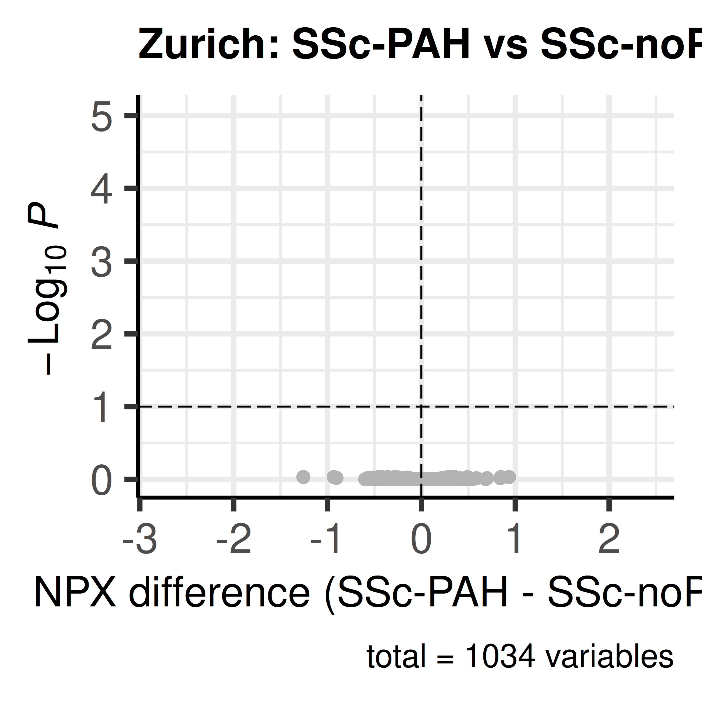
keyvals_p <- rep("grey70", nrow(DE_group_p))
names(keyvals_p) <- rep("Not significant", nrow(DE_group_p))
keyvals_p[DE_group_p$adj.P.Val < 0.1 & DE_group_p$logFC > 0] <- "#A63A2A"
keyvals_p[DE_group_p$adj.P.Val < 0.1 & DE_group_p$logFC < 0] <- "#004C8C"
names(keyvals_p)[keyvals_p == "#A63A2A"] <- "Higher in SSc-PAH"
names(keyvals_p)[keyvals_p == "#004C8C"] <- "Lower in SSc-PAH"
p_volcano_group_p <- EnhancedVolcano(DE_group_p, lab = DE_group_p$Protein, x = "logFC", y = "adj.P.Val", labSize = 0,
pointSize = 1.4, pCutoff = 0.1, FCcutoff = 0, colCustom = keyvals_p, colAlpha = 1, subtitle = NULL,
title = "Poland: SSc-PAH vs SSc-noPAH", xlab = "NPX difference (SSc-PAH - SSc-noPAH)") + theme(legend.position = "none")
p_volcano_group_p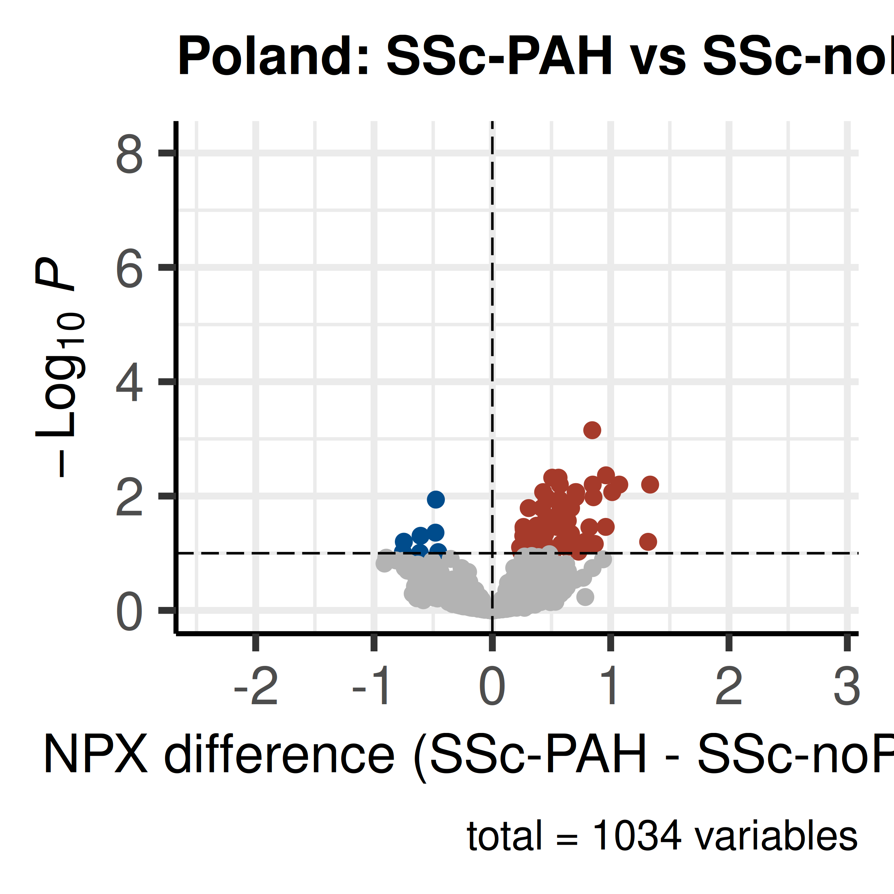
Cross-cohort concordance
concordance_group <- inner_join(
DE_group_z %>% select(Protein, effect_z = logFC),
DE_group_p %>% select(Protein, effect_p = logFC), by = "Protein"
)
pear_group <- cor.test(concordance_group$effect_z, concordance_group$effect_p, method = "pearson")
spear_group <- cor.test(concordance_group$effect_z, concordance_group$effect_p, method = "spearman", exact = FALSE)
p_concordance_group <- ggplot(concordance_group, aes(effect_z, effect_p)) +
geom_hline(yintercept = 0, linewidth = 0.35, color = "grey75") + geom_vline(xintercept = 0, linewidth = 0.35, color = "grey75") +
geom_point(size = 1.2, alpha = 0.65) + geom_smooth(method = MASS::rlm, formula = y ~ x, se = FALSE, linewidth = 0.8) +
labs(x = "Zurich effect", y = "Poland effect",
title = paste0("SSc-PAH vs SSc-noPAH\nPearson r = ", round(pear_group$estimate, 2), "; Spearman rho = ", round(spear_group$estimate, 2))) +
theme_classic(base_size = 11)
p_concordance_group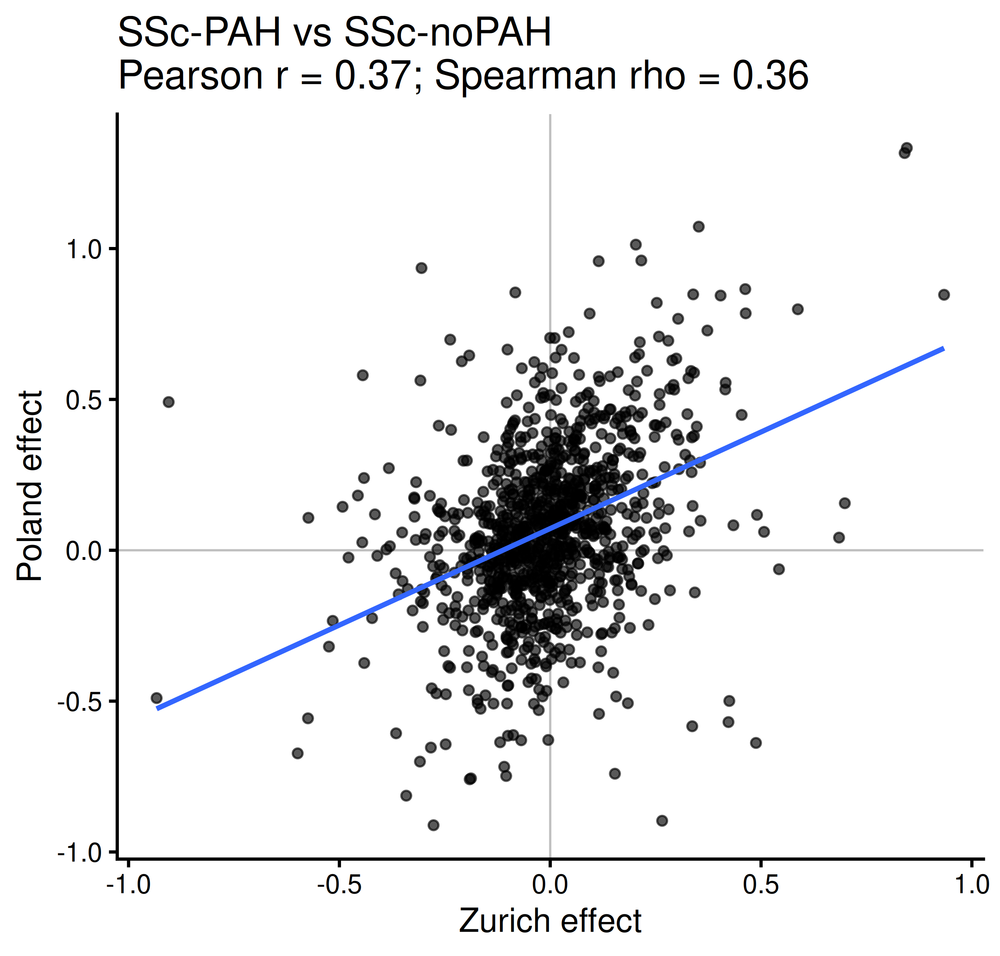
ggsave(here::here(output_dir_figs, "PAH_noPAH_cross_cohort_concordance.png"), p_concordance_group, width = 4.6, height = 4.4, dpi = 300)DETECT improvement - Zurich only
stratified_folds_binary <- function(y, k = 5){
folds <- integer(length(y))
for (lev in sort(unique(y))){
idx <- which(y == lev)
idx <- sample(idx)
folds[idx] <- rep(seq_len(k), length.out = length(idx))
}
folds
}
specificity_at_sensitivity <- function(y, score, target_sensitivity = 0.95){
ok <- is.finite(y) & is.finite(score)
y <- y[ok]; score <- score[ok]
thresholds <- sort(unique(c(Inf, score, -Inf)), decreasing = TRUE)
out <- lapply(thresholds, function(th){
pred <- ifelse(score >= th, 1, 0)
sens <- sum(pred == 1 & y == 1) / sum(y == 1)
spec <- sum(pred == 0 & y == 0) / sum(y == 0)
c(threshold = th, sensitivity = sens, specificity = spec)
}) %>% do.call(rbind, .) %>% as.data.frame()
out <- out[out$sensitivity >= target_sensitivity, , drop = FALSE]
if (nrow(out) == 0) return(c(threshold = NA, sensitivity = NA, specificity = NA))
best <- out[out$specificity == max(out$specificity), , drop = FALSE]
best <- best[which.max(best$threshold), , drop = FALSE]
unlist(best[1, ])
}
calc_auc <- function(y, score){
as.numeric(pROC::auc(pROC::roc(y, score, levels = c(0, 1), quiet = TRUE, direction = "<")))
}detect_df <- z_all %>%
filter(Group %in% c("SSc-noPAH", "SSc-PAH"), !is.na(DETECT_score)) %>%
filter(Barcode %in% colnames(data_z)) %>%
mutate(y = ifelse(Group == "SSc-PAH", 1, 0))
X_detect_prot <- t(as.matrix(data_z[common_proteins, detect_df$Barcode, drop = FALSE]))
y_detect <- detect_df$y
detect_score <- detect_df$DETECT_score
set.seed(1)
R_detect <- 50
K_detect <- 5
pred_sum_detect <- matrix(0, nrow = nrow(detect_df), ncol = 3, dimnames = list(detect_df$Barcode, c("DETECT", "Proteomics", "DETECT_plus_proteomics")))
pred_n_detect <- matrix(0, nrow = nrow(detect_df), ncol = 3, dimnames = list(detect_df$Barcode, c("DETECT", "Proteomics", "DETECT_plus_proteomics")))
selected_n_detect <- c()
for (r in seq_len(R_detect)){
folds <- stratified_folds_binary(y_detect, K_detect)
for (f in seq_len(K_detect)){
tr <- which(folds != f)
te <- which(folds == f)
p_detect <- detect_score[te]
inner_fold <- stratified_folds_binary(y_detect[tr], 5)
fit_prot <- cv.glmnet(X_detect_prot[tr, , drop = FALSE], y_detect[tr], family = "binomial", alpha = 1,
foldid = inner_fold, type.measure = "auc", standardize = TRUE)
p_prot <- as.numeric(predict(fit_prot, newx = X_detect_prot[te, , drop = FALSE], s = "lambda.1se", type = "response"))
X_comb_tr <- cbind(DETECT = detect_score[tr], X_detect_prot[tr, , drop = FALSE])
X_comb_te <- cbind(DETECT = detect_score[te], X_detect_prot[te, , drop = FALSE])
penalty_comb <- c(0, rep(1, ncol(X_detect_prot)))
fit_comb <- cv.glmnet(X_comb_tr, y_detect[tr], family = "binomial", alpha = 1, foldid = inner_fold,
type.measure = "auc", standardize = TRUE, penalty.factor = penalty_comb)
p_comb <- as.numeric(predict(fit_comb, newx = X_comb_te, s = "lambda.1se", type = "response"))
pred_sum_detect[te, "DETECT"] <- pred_sum_detect[te, "DETECT"] + p_detect
pred_sum_detect[te, "Proteomics"] <- pred_sum_detect[te, "Proteomics"] + p_prot
pred_sum_detect[te, "DETECT_plus_proteomics"] <- pred_sum_detect[te, "DETECT_plus_proteomics"] + p_comb
pred_n_detect[te, ] <- pred_n_detect[te, ] + 1
b <- as.matrix(coef(fit_prot, s = "lambda.1se"))[-1, 1]
selected_n_detect <- c(selected_n_detect, sum(b != 0))
}
}
detect_oof <- pred_sum_detect / pred_n_detect
detect_pred_df <- data.frame(Barcode = detect_df$Barcode, y = y_detect, DETECT = detect_oof[, "DETECT"],
Proteomics = detect_oof[, "Proteomics"], DETECT_plus_proteomics = detect_oof[, "DETECT_plus_proteomics"])
write.csv(detect_pred_df, here::here(output_dir_data, "DETECT_repeatedCV_predictions.csv"), row.names = FALSE)
summary(selected_n_detect) Min. 1st Qu. Median Mean 3rd Qu. Max.
0.00 3.00 13.50 13.37 22.00 41.00 get_detect_perf <- function(score, model_name){
ss <- specificity_at_sensitivity(y_detect, score, 0.95)
data.frame(Model = model_name, AUC = calc_auc(y_detect, score), Sensitivity = unname(ss["sensitivity"]), Specificity_at_95_sensitivity = unname(ss["specificity"]),
Threshold = unname(ss["threshold"]), Negative_RHCs_avoided = round(unname(ss["specificity"]) * sum(y_detect == 0)))
}
detect_perf <- bind_rows(
get_detect_perf(detect_oof[, "DETECT"], "DETECT"),
get_detect_perf(detect_oof[, "Proteomics"], "Proteomics"),
get_detect_perf(detect_oof[, "DETECT_plus_proteomics"], "DETECT + proteomics")
)
set.seed(2)
B_detect <- 2000
boot_detect <- vector("list", B_detect)
for (b in seq_len(B_detect)){
idx <- sample(seq_len(nrow(detect_df)), replace = TRUE)
yb <- y_detect[idx]
if (length(unique(yb)) < 2) next
vals <- lapply(c("DETECT", "Proteomics", "DETECT_plus_proteomics"), function(m){
sc <- detect_oof[idx, m]
ss <- specificity_at_sensitivity(yb, sc, 0.95)
c(AUC = calc_auc(yb, sc), Spec95 = unname(ss["specificity"]))
})
boot_detect[[b]] <- data.frame(
DETECT_AUC = vals[[1]]["AUC"], Proteomics_AUC = vals[[2]]["AUC"], Combined_AUC = vals[[3]]["AUC"],
DETECT_Spec95 = vals[[1]]["Spec95"], Proteomics_Spec95 = vals[[2]]["Spec95"], Combined_Spec95 = vals[[3]]["Spec95"]
)
}
boot_detect <- bind_rows(boot_detect)
detect_ci <- data.frame(
Model = c("DETECT", "Proteomics", "DETECT + proteomics"),
AUC_low = c(quantile(boot_detect$DETECT_AUC, 0.025, na.rm = TRUE), quantile(boot_detect$Proteomics_AUC, 0.025, na.rm = TRUE), quantile(boot_detect$Combined_AUC, 0.025, na.rm = TRUE)),
AUC_high = c(quantile(boot_detect$DETECT_AUC, 0.975, na.rm = TRUE), quantile(boot_detect$Proteomics_AUC, 0.975, na.rm = TRUE), quantile(boot_detect$Combined_AUC, 0.975, na.rm = TRUE)),
Spec95_low = c(quantile(boot_detect$DETECT_Spec95, 0.025, na.rm = TRUE), quantile(boot_detect$Proteomics_Spec95, 0.025, na.rm = TRUE), quantile(boot_detect$Combined_Spec95, 0.025, na.rm = TRUE)),
Spec95_high = c(quantile(boot_detect$DETECT_Spec95, 0.975, na.rm = TRUE), quantile(boot_detect$Proteomics_Spec95, 0.975, na.rm = TRUE), quantile(boot_detect$Combined_Spec95, 0.975, na.rm = TRUE))
)
detect_perf <- left_join(detect_perf, detect_ci, by = "Model")
detect_perf Model AUC Sensitivity Specificity_at_95_sensitivity
1 DETECT 0.7699074 0.9666667 0
2 Proteomics 0.6333333 0.9666667 0
3 DETECT + proteomics 0.7546296 0.9666667 0
Threshold Negative_RHCs_avoided AUC_low AUC_high Spec95_low Spec95_high
1 26.55923473 0 0.6372200 0.8860362 0 0.5000000
2 0.28310054 0 0.4897917 0.7719930 0 0.4186659
3 0.05777724 0 0.6175876 0.8759202 0 0.4737171write.csv(detect_perf, here::here(output_dir_data, "DETECT_model_performance.csv"), row.names = FALSE)
detect_delta <- data.frame(
Comparison = c("Proteomics - DETECT", "DETECT + proteomics - DETECT"),
Delta_AUC = c(mean(boot_detect$Proteomics_AUC - boot_detect$DETECT_AUC, na.rm = TRUE), mean(boot_detect$Combined_AUC - boot_detect$DETECT_AUC, na.rm = TRUE)),
AUC_low = c(quantile(boot_detect$Proteomics_AUC - boot_detect$DETECT_AUC, 0.025, na.rm = TRUE), quantile(boot_detect$Combined_AUC - boot_detect$DETECT_AUC, 0.025, na.rm = TRUE)),
AUC_high = c(quantile(boot_detect$Proteomics_AUC - boot_detect$DETECT_AUC, 0.975, na.rm = TRUE), quantile(boot_detect$Combined_AUC - boot_detect$DETECT_AUC, 0.975, na.rm = TRUE)),
Delta_Spec95 = c(mean(boot_detect$Proteomics_Spec95 - boot_detect$DETECT_Spec95, na.rm = TRUE), mean(boot_detect$Combined_Spec95 - boot_detect$DETECT_Spec95, na.rm = TRUE)),
Spec95_low = c(quantile(boot_detect$Proteomics_Spec95 - boot_detect$DETECT_Spec95, 0.025, na.rm = TRUE), quantile(boot_detect$Combined_Spec95 - boot_detect$DETECT_Spec95, 0.025, na.rm = TRUE)),
Spec95_high = c(quantile(boot_detect$Proteomics_Spec95 - boot_detect$DETECT_Spec95, 0.975, na.rm = TRUE), quantile(boot_detect$Combined_Spec95 - boot_detect$DETECT_Spec95, 0.975, na.rm = TRUE))
)
detect_delta Comparison Delta_AUC AUC_low AUC_high
1 Proteomics - DETECT -0.13771705 -0.27120459 -0.002263391
2 DETECT + proteomics - DETECT -0.01523528 -0.03076976 -0.004326923
Delta_Spec95 Spec95_low Spec95_high
1 -0.068677901 -0.44458333 0.135229
2 -0.007480599 -0.06985252 0.000000write.csv(detect_delta, here::here(output_dir_data, "DETECT_incremental_performance.csv"), row.names = FALSE)roc_detect <- pROC::roc(y_detect, detect_oof[, "DETECT"], quiet = TRUE, direction = "<")
roc_prot <- pROC::roc(y_detect, detect_oof[, "Proteomics"], quiet = TRUE, direction = "<")
roc_comb <- pROC::roc(y_detect, detect_oof[, "DETECT_plus_proteomics"], quiet = TRUE, direction = "<")
roc_detect_df <- bind_rows(
data.frame(FPR = 1 - roc_detect$specificities, Sensitivity = roc_detect$sensitivities, Model = "DETECT"),
data.frame(FPR = 1 - roc_prot$specificities, Sensitivity = roc_prot$sensitivities, Model = "Proteomics"),
data.frame(FPR = 1 - roc_comb$specificities, Sensitivity = roc_comb$sensitivities, Model = "DETECT + proteomics")
) %>% arrange(Model, FPR, Sensitivity)
roc_cols <- c("DETECT" = "grey40", "Proteomics" = "#004C8C", "DETECT + proteomics" = "#A63A2A")
p_detect_roc <- ggplot(roc_detect_df, aes(FPR, Sensitivity, color = Model)) +
geom_abline(slope = 1, intercept = 0, linetype = 2, color = "grey75") + geom_step(direction = "hv", linewidth = 0.9) +
scale_color_manual(values = roc_cols) + coord_equal() + labs(x = "1 - Specificity", y = "Sensitivity", title = "Zurich DETECT-positive cohort") +
theme_classic(base_size = 11) + theme(legend.position = "bottom")
p_detect_spec <- detect_perf %>%
mutate(Model = factor(Model, levels = c("DETECT", "Proteomics", "DETECT + proteomics"))) %>%
ggplot(aes(Model, Specificity_at_95_sensitivity, color = Model)) + geom_point(size = 3) +
geom_errorbar(aes(ymin = Spec95_low, ymax = Spec95_high), width = 0.12) + scale_color_manual(values = roc_cols) +
coord_cartesian(ylim = c(0, 1)) + labs(x = NULL, y = "Specificity at >=95% sensitivity") +
theme_classic(base_size = 11) + theme(legend.position = "none", axis.text.x = element_text(angle = 20, hjust = 1))
p_detect_roc + p_detect_spec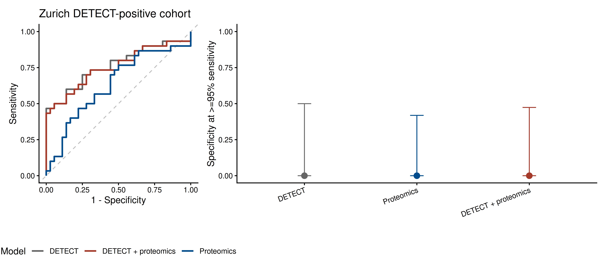
ggsave(here::here(output_dir_figs, "DETECT_performance_panels.png"), p_detect_roc + p_detect_spec, width = 10, height = 4.5, dpi = 300)Figure2 <- (p_volcano_group_z | p_volcano_group_p | p_concordance_group) / (p_detect_roc | p_detect_spec | plot_spacer()) +
plot_annotation(tag_levels = "A")
Figure2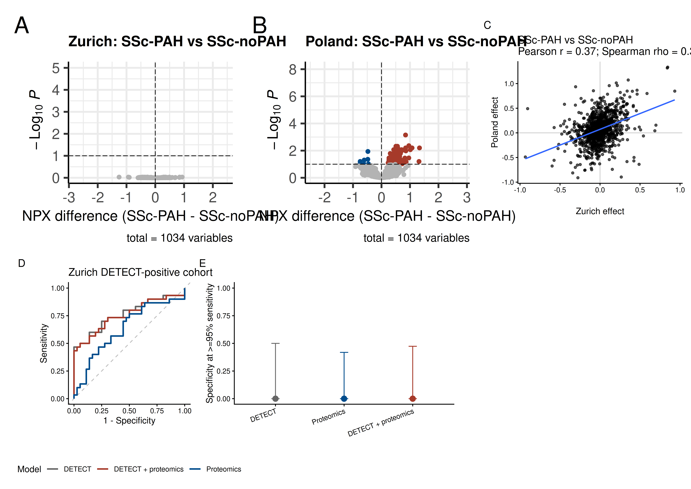
ggsave(here::here(output_dir_figs, "Figure2_PAH_DETECT.png"), Figure2, width = 12, height = 8.5, dpi = 300)Aim 2: Impaired RV-PA coupling
Differential abundance - Zurich
meta_z_coupling <- z_pah %>%
filter(!is.na(TAPSE_sPAP), !is.na(Age), !is.na(Sex)) %>%
mutate(TAPSE_group = ifelse(TAPSE_sPAP <= 0.32, "Impaired", "Preserved"),
TAPSE_group = factor(TAPSE_group, levels = c("Preserved", "Impaired")), Age_z = as.numeric(scale(Age))) %>%
column_to_rownames("Barcode")
expr_z_coupling <- as.matrix(data_z[, rownames(meta_z_coupling), drop = FALSE])
design_z_coupling <- model.matrix(~ TAPSE_group + Age_z + Sex, data = meta_z_coupling)
fit_z_coupling <- eBayes(lmFit(expr_z_coupling, design_z_coupling))
DE_coupling_z <- topTable(fit_z_coupling, coef = "TAPSE_groupImpaired", number = Inf, adjust.method = "BH") %>% rownames_to_column("Protein")
write.csv(DE_coupling_z, here::here(output_dir_data, "DE_impaired_vs_preserved_RVPA_Zurich.csv"), row.names = FALSE)
DE_coupling_z %>% filter(adj.P.Val < 0.1) %>% arrange(adj.P.Val) %>% head(30) Protein logFC AveExpr t P.Value adj.P.Val
1 CFAP36 0.9337070 0.05590769 5.233166 1.973773e-05 0.008455739
2 TARBP2 0.9774879 0.17989615 5.214120 2.073702e-05 0.008455739
3 SUMO1 1.0908184 -0.34851154 5.149342 2.453309e-05 0.008455739
4 SEPTIN8 1.0318151 1.41127308 4.818071 5.809019e-05 0.013570747
5 LCN15 1.9294293 0.83875385 4.771290 6.562257e-05 0.013570747
6 KEL 0.8751361 0.24353077 4.584151 1.068846e-04 0.015967916
7 TGFBR1 0.9796213 0.52162308 4.579812 1.081000e-04 0.015967916
8 STK11 0.9332130 0.23613077 4.451392 1.510547e-04 0.018111820
9 METAP2 1.4460872 0.86430000 4.434988 1.576464e-04 0.018111820
10 PRDX1 1.1270223 0.54387692 4.388218 1.780555e-04 0.018222406
11 UBL4A 0.9705366 1.18296923 4.325674 2.095116e-04 0.018222406
12 DFFA 1.0591603 0.98069231 4.253325 2.528427e-04 0.018222406
13 PRKAR2A 1.0783043 1.19598462 4.184637 3.021735e-04 0.018222406
14 MKI67 1.2532862 0.50478846 4.183027 3.034378e-04 0.018222406
15 BNIP3L 0.9333884 0.10916923 4.171922 3.123009e-04 0.018222406
16 FGF23 2.1823460 0.10372692 4.144074 3.356701e-04 0.018222406
17 PSMD1 1.5465561 1.38612692 4.131351 3.469152e-04 0.018222406
18 TNFRSF10B 1.0695521 1.42198846 4.115823 3.611465e-04 0.018222406
19 NT5C1A 1.1681922 0.35976154 4.110399 3.662524e-04 0.018222406
20 RABGAP1L 1.2809018 0.56186538 4.106526 3.699424e-04 0.018222406
21 EIF2S2 1.2813626 0.87023077 4.091077 3.850286e-04 0.018222406
22 USO1 0.9537847 0.83120000 4.088393 3.877108e-04 0.018222406
23 FKBP4 1.2116993 1.27207308 4.040012 4.393584e-04 0.018942499
24 ATP6V1G1 0.9971433 1.10233077 4.039737 4.396712e-04 0.018942499
25 CDC26 0.7396379 0.62548462 4.009344 4.755596e-04 0.019127448
26 DCTN1 1.2227691 2.66245000 3.963950 5.346105e-04 0.019127448
27 PTPN11 1.0956173 0.53935385 3.960406 5.395139e-04 0.019127448
28 AKAP8 0.9000525 1.13752308 3.959329 5.410129e-04 0.019127448
29 EBAG9 0.7864832 -0.16524231 3.942870 5.644382e-04 0.019127448
30 FKBP5 1.4573064 1.76230385 3.942081 5.655859e-04 0.019127448
B
1 2.88085301
2 2.83520437
3 2.67980062
4 1.88238564
5 1.76955080
6 1.31808331
7 1.30761979
8 0.99804831
9 0.95853701
10 0.84593453
11 0.69549823
12 0.52172322
13 0.35703755
14 0.35318048
15 0.32658624
16 0.25993920
17 0.22951078
18 0.19239010
19 0.17942862
20 0.17017388
21 0.13327612
22 0.12686839
23 0.01146204
24 0.01080549
25 -0.06157732
26 -0.16950801
27 -0.17792480
28 -0.18048253
29 -0.21955392
30 -0.22142616Differential abundance - Poland
The Polish discovery analysis uses all SSc patients with available TAPSE/sPAP. SSc-noPAH patients all fall in the preserved/non-impaired group and are therefore included in the development phenotype.
meta_p_coupling <- p_all %>%
filter(!is.na(TAPSE_sPAP), !is.na(Age), !is.na(Sex)) %>%
mutate(TAPSE_group = ifelse(TAPSE_sPAP <= 0.32, "Impaired", "Preserved"),
TAPSE_group = factor(TAPSE_group, levels = c("Preserved", "Impaired")), Age_z = as.numeric(scale(Age))) %>%
column_to_rownames("Barcode")
expr_p_coupling <- as.matrix(data_p[, rownames(meta_p_coupling), drop = FALSE])
design_p_coupling <- model.matrix(~ TAPSE_group + Age_z + Sex, data = meta_p_coupling)
fit_p_coupling <- eBayes(lmFit(expr_p_coupling, design_p_coupling))
DE_coupling_p <- topTable(fit_p_coupling, coef = "TAPSE_groupImpaired", number = Inf, adjust.method = "BH") %>% rownames_to_column("Protein")
write.csv(DE_coupling_p, here::here(output_dir_data, "DE_impaired_vs_preserved_RVPA_Poland_all_SSc.csv"), row.names = FALSE)
DE_coupling_p %>% filter(adj.P.Val < 0.1) %>% arrange(adj.P.Val) %>% head(30) Protein logFC AveExpr t P.Value adj.P.Val
1 CLSTN2 0.8608327 0.31567960 5.389529 9.384115e-07 0.0005306546
2 RSPO1 0.6116502 0.22392822 5.366565 1.026411e-06 0.0005306546
3 FGF23 1.4540186 0.55250202 4.987074 4.422365e-06 0.0015242417
4 PRELP 0.5193187 0.03154992 4.884279 6.521182e-06 0.0016857256
5 CEACAM16 -1.1743897 0.22940480 -4.724914 1.182760e-05 0.0024459467
6 CXCL17 0.8961132 0.27049679 4.581477 2.006323e-05 0.0034575630
7 ADM 0.6913191 0.16010914 4.419191 3.615276e-05 0.0053402786
8 TNFRSF10B 0.6997986 0.18083954 4.300924 5.517470e-05 0.0063214150
9 HGF 0.5807348 0.09800409 4.279984 5.942837e-05 0.0063214150
10 TAFA5 0.5224038 0.19526320 4.271986 6.113554e-05 0.0063214150
11 SIGLEC8 0.5584893 0.20185859 4.238890 6.871728e-05 0.0064594242
12 ACE2 0.8413462 0.35164568 4.109402 1.080936e-04 0.0093140682
13 EBI3 0.4883530 0.11958517 4.063049 1.269010e-04 0.0100935139
14 IL15 0.4525392 0.10797966 3.983440 1.667819e-04 0.0123180355
15 PALM2 0.6107657 0.09786160 3.892089 2.274059e-04 0.0154412580
16 OCLN 0.6212080 0.07767945 3.855162 2.574869e-04 0.0154412580
17 EDA2R 0.7533139 0.22189782 3.841776 2.693056e-04 0.0154412580
18 SCARB2 0.6399535 0.27589488 3.810500 2.989762e-04 0.0154412580
19 LAG3 0.6524608 0.23209586 3.808120 3.013580e-04 0.0154412580
20 HRC 0.3038139 0.07219783 3.804332 3.051859e-04 0.0154412580
21 CALCB 0.5105580 0.15552943 3.788430 3.217701e-04 0.0154412580
22 MUC16 1.0665007 0.37166757 3.782166 3.285374e-04 0.0154412580
23 CD302 0.4228059 0.18578958 3.759548 3.541197e-04 0.0159199913
24 TNFRSF19 0.5289501 0.22943658 3.678930 4.616793e-04 0.0190337598
25 LMOD1 0.4223712 0.05643486 3.654767 4.995655e-04 0.0190337598
26 EGFLAM 0.4542714 0.14518334 3.647716 5.111688e-04 0.0190337598
27 PTPRN2 0.4783467 0.04910628 3.647706 5.111853e-04 0.0190337598
28 RAET1L 0.5089452 0.24663897 3.621109 5.573040e-04 0.0190337598
29 ACVRL1 0.4097379 0.07754148 3.619254 5.606634e-04 0.0190337598
30 CXCL8 0.9004425 0.33732976 3.614132 5.700426e-04 0.0190337598
B
1 5.49933003
2 5.41603119
3 4.06022107
4 3.70031155
5 3.14920948
6 2.66079812
7 2.11751927
8 1.72821936
9 1.65989786
10 1.63384926
11 1.52635905
12 1.11039954
13 0.96332870
14 0.71306656
15 0.42961090
16 0.31618699
17 0.27523598
18 0.17991218
19 0.17267821
20 0.16117136
21 0.11294258
22 0.09397758
23 0.02567607
24 -0.21561863
25 -0.28727354
26 -0.30812613
27 -0.30815536
28 -0.38656712
29 -0.39202060
30 -0.40707368Differential abundance plots
keyvals_cz <- rep("grey70", nrow(DE_coupling_z)); names(keyvals_cz) <- rep("Not significant", nrow(DE_coupling_z))
keyvals_cz[DE_coupling_z$adj.P.Val < 0.1 & DE_coupling_z$logFC > 0] <- "#A63A2A"
keyvals_cz[DE_coupling_z$adj.P.Val < 0.1 & DE_coupling_z$logFC < 0] <- "#004C8C"
names(keyvals_cz)[keyvals_cz == "#A63A2A"] <- "Higher with impaired coupling"
names(keyvals_cz)[keyvals_cz == "#004C8C"] <- "Lower with impaired coupling"
keyvals_cp <- rep("grey70", nrow(DE_coupling_p)); names(keyvals_cp) <- rep("Not significant", nrow(DE_coupling_p))
keyvals_cp[DE_coupling_p$adj.P.Val < 0.1 & DE_coupling_p$logFC > 0] <- "#A63A2A"
keyvals_cp[DE_coupling_p$adj.P.Val < 0.1 & DE_coupling_p$logFC < 0] <- "#004C8C"
names(keyvals_cp)[keyvals_cp == "#A63A2A"] <- "Higher with impaired coupling"
names(keyvals_cp)[keyvals_cp == "#004C8C"] <- "Lower with impaired coupling"
p_coupling_z <- EnhancedVolcano(DE_coupling_z, lab = DE_coupling_z$Protein, x = "logFC", y = "adj.P.Val", labSize = 0,
pointSize = 1.4, pCutoff = 0.1, FCcutoff = 0, colCustom = keyvals_cz, colAlpha = 1, subtitle = NULL,
title = "Zurich SSc-PAH", xlab = "NPX difference (impaired - preserved)") + theme(legend.position = "none")
p_coupling_p <- EnhancedVolcano(DE_coupling_p, lab = DE_coupling_p$Protein, x = "logFC", y = "adj.P.Val", labSize = 0,
pointSize = 1.4, pCutoff = 0.1, FCcutoff = 0, colCustom = keyvals_cp, colAlpha = 1, subtitle = NULL,
title = "Poland all SSc", xlab = "NPX difference (impaired - preserved)") + theme(legend.position = "none")
concordance_coupling <- inner_join(
DE_coupling_z %>% select(Protein, effect_z = logFC),
DE_coupling_p %>% select(Protein, effect_p = logFC), by = "Protein"
)
pear_coupling <- cor.test(concordance_coupling$effect_z, concordance_coupling$effect_p, method = "pearson")
spear_coupling <- cor.test(concordance_coupling$effect_z, concordance_coupling$effect_p, method = "spearman", exact = FALSE)
p_concordance_coupling <- ggplot(concordance_coupling, aes(effect_z, effect_p)) +
geom_hline(yintercept = 0, linewidth = 0.35, color = "grey75") + geom_vline(xintercept = 0, linewidth = 0.35, color = "grey75") +
geom_point(size = 1.2, alpha = 0.65) + geom_smooth(method = MASS::rlm, formula = y ~ x, se = FALSE, linewidth = 0.8) +
labs(x = "Zurich effect", y = "Poland effect",
title = paste0("Impaired vs preserved\nPearson r = ", round(pear_coupling$estimate, 2), "; Spearman rho = ", round(spear_coupling$estimate, 2))) +
theme_classic(base_size = 11)
Figure3 <- (p_coupling_p | p_coupling_z | p_concordance_coupling) + plot_annotation(tag_levels = "A")
Figure3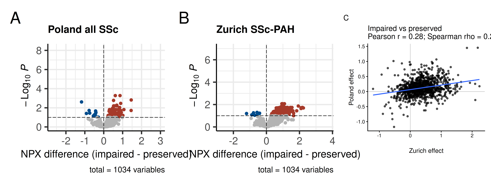
ggsave(here::here(output_dir_figs, "Figure3_impaired_RVPA_proteomics.png"), Figure3, width = 12, height = 4.5, dpi = 300)Protein panel development in Poland
The development cohort includes all Polish SSc patients with TAPSE/sPAP available. TAPSE/sPAP <= 0.32 defines impaired RV-PA coupling; all patients above 0.32 are classified as preserved/non-impaired. External validation remains restricted to Zurich SSc-PAH patients.
Prepare development and external validation cohorts
p_dev <- p_all %>%
filter(!is.na(TAPSE_sPAP), !is.na(Age), !is.na(Sex), Barcode %in% colnames(data_p)) %>%
arrange(Barcode) %>%
mutate(y_impaired = ifelse(TAPSE_sPAP <= 0.32, 1, 0), Impaired = y_impaired,
TAPSE_group = factor(ifelse(y_impaired == 1, "Impaired", "Preserved"), levels = c("Preserved", "Impaired")))
z_val <- z_pah %>%
filter(!is.na(TAPSE_sPAP), Barcode %in% colnames(data_z)) %>%
arrange(Barcode) %>%
mutate(y_impaired = ifelse(TAPSE_sPAP <= 0.32, 1, 0), Impaired = y_impaired,
TAPSE_group = factor(ifelse(y_impaired == 1, "Impaired", "Preserved"), levels = c("Preserved", "Impaired")))
cat("Poland development cohort n =", nrow(p_dev), "\n")Poland development cohort n = 69 print(table(p_dev$Group, p_dev$TAPSE_group))
Preserved Impaired
SSc-noPAH 31 0
SSc-PAH 14 24cat("Zurich external validation SSc-PAH n =", nrow(z_val), "\n")Zurich external validation SSc-PAH n = 26 print(table(z_val$TAPSE_group))
Preserved Impaired
20 6 Candidate ranking in Poland
The top 50 proteins ranked by the absolute moderated limma t-statistic in the full Polish development cohort are used as the final candidate pool. For estimation of internal predictive performance and panel size, the limma ranking is repeated inside each outer cross-validation training fold. For bootstrap stability selection, the top 50 candidates from the full Polish development cohort are kept fixed.
candidate_n <- 50
candidate_ranking_p <- DE_coupling_p %>% filter(Protein %in% common_proteins) %>% arrange(desc(abs(t)))
candidate_proteins <- candidate_ranking_p$Protein[seq_len(min(candidate_n, nrow(candidate_ranking_p)))]
candidate_ranking_p %>% select(Protein, logFC, t, P.Value, adj.P.Val) %>% head(50) Protein logFC t P.Value adj.P.Val
1 CLSTN2 0.8608327 5.389529 9.384115e-07 0.0005306546
2 RSPO1 0.6116502 5.366565 1.026411e-06 0.0005306546
3 FGF23 1.4540186 4.987074 4.422365e-06 0.0015242417
4 PRELP 0.5193187 4.884279 6.521182e-06 0.0016857256
5 CEACAM16 -1.1743897 -4.724914 1.182760e-05 0.0024459467
6 CXCL17 0.8961132 4.581477 2.006323e-05 0.0034575630
7 ADM 0.6913191 4.419191 3.615276e-05 0.0053402786
8 TNFRSF10B 0.6997986 4.300924 5.517470e-05 0.0063214150
9 HGF 0.5807348 4.279984 5.942837e-05 0.0063214150
10 TAFA5 0.5224038 4.271986 6.113554e-05 0.0063214150
11 SIGLEC8 0.5584893 4.238890 6.871728e-05 0.0064594242
12 ACE2 0.8413462 4.109402 1.080936e-04 0.0093140682
13 IL15 0.4525392 3.983440 1.667819e-04 0.0123180355
14 PALM2 0.6107657 3.892089 2.274059e-04 0.0154412580
15 OCLN 0.6212080 3.855162 2.574869e-04 0.0154412580
16 EDA2R 0.7533139 3.841776 2.693056e-04 0.0154412580
17 SCARB2 0.6399535 3.810500 2.989762e-04 0.0154412580
18 LAG3 0.6524608 3.808120 3.013580e-04 0.0154412580
19 HRC 0.3038139 3.804332 3.051859e-04 0.0154412580
20 CALCB 0.5105580 3.788430 3.217701e-04 0.0154412580
21 MUC16 1.0665007 3.782166 3.285374e-04 0.0154412580
22 CD302 0.4228059 3.759548 3.541197e-04 0.0159199913
23 TNFRSF19 0.5289501 3.678930 4.616793e-04 0.0190337598
24 LMOD1 0.4223712 3.654767 4.995655e-04 0.0190337598
25 EGFLAM 0.4542714 3.647716 5.111688e-04 0.0190337598
26 PTPRN2 0.4783467 3.647706 5.111853e-04 0.0190337598
27 ACVRL1 0.4097379 3.619254 5.606634e-04 0.0190337598
28 CXCL8 0.9004425 3.614132 5.700426e-04 0.0190337598
29 FGF21 1.4491231 3.597803 6.009485e-04 0.0190337598
30 CLSTN3 0.4327473 3.590740 6.148024e-04 0.0190337598
31 LIPF -0.7735955 -3.586288 6.236917e-04 0.0190337598
32 IFI30 0.6075675 3.585207 6.258683e-04 0.0190337598
33 CFC1 0.4684544 3.542424 7.180541e-04 0.0210617694
34 BAIAP2 0.8602985 3.535860 7.332918e-04 0.0210617694
35 CD38 0.4248115 3.525268 7.585291e-04 0.0211978126
36 LRRN1 -0.4299838 -3.512639 7.896941e-04 0.0214879934
37 NOS3 0.8116233 3.489981 8.486760e-04 0.0225007953
38 DCN 0.2839730 3.477713 8.823321e-04 0.0228082859
39 BMP4 0.4385095 3.462500 9.258215e-04 0.0233487656
40 RSPO3 0.4907675 3.449446 9.647482e-04 0.0237511809
41 NUCB2 0.4744648 3.372001 1.229472e-03 0.0282135701
42 CSF2 0.3192998 3.368536 1.242787e-03 0.0282135701
43 XCL1 0.4879974 3.366620 1.250209e-03 0.0282135701
44 EVA1C 0.3806149 3.365351 1.255149e-03 0.0282135701
45 SPOCK1 0.3817734 3.355105 1.295700e-03 0.0285054035
46 CALCA 0.9290913 3.321502 1.437542e-03 0.0302900908
47 NT5C1A 0.5805341 3.318548 1.450687e-03 0.0302900908
48 ADAMTSL4 0.5049419 3.311821 1.481046e-03 0.0302900908
49 TNFSF13 0.3706715 3.308991 1.493999e-03 0.0302900908
50 CLEC4A -0.4143393 -3.302211 1.525456e-03 0.0303331124write.csv(candidate_ranking_p, here::here(output_dir_data, "Poland_RVPA_candidate_ranking.csv"), row.names = FALSE)
write.csv(candidate_ranking_p %>% slice_head(n = candidate_n), here::here(output_dir_data, "Poland_RVPA_top50_candidates.csv"), row.names = FALSE)Helper functions
make_stratified_folds <- function(y, k = 5){
fold_id <- integer(length(y))
for (cl in sort(unique(y))){
ids <- sample(which(y == cl))
fold_id[ids] <- rep(seq_len(k), length.out = length(ids))
}
fold_id
}rank_proteins_limma <- function(expr_mat, meta, proteins){
expr <- as.matrix(expr_mat[proteins, meta$Barcode, drop = FALSE])
meta$Sex_M <- ifelse(as.character(meta$Sex) == "M", 1, 0)
design <- model.matrix(~ Impaired + Age + Sex_M, data = meta)
fit <- limma::eBayes(limma::lmFit(expr, design))
limma::topTable(fit, coef = "Impaired", number = Inf, sort.by = "none") %>%
rownames_to_column("Protein") %>% arrange(desc(abs(t)))
}auc_safe <- function(y, pred){
ok <- is.finite(y) & is.finite(pred)
if (sum(ok) < 3 || length(unique(y[ok])) < 2) return(NA_real_)
as.numeric(pROC::auc(pROC::roc(y[ok], pred[ok], levels = c(0, 1), direction = "<", quiet = TRUE)))
}LASSO panel size: 1-10 proteins
For every outer training fold, candidate ranking is repeated from scratch, the top 50 proteins are passed to LASSO, and an inner cross-validation identifies the best solution for each panel size from 1 to 10 proteins. Performance across panel sizes is shown for transparency. For the final analysis, the panel size is fixed at five proteins.
choose_lasso_lambda_for_k <- function(cvfit, k, kmax = 10){
beta <- as.matrix(coef(cvfit$glmnet.fit))
nzero <- colSums(beta[-1, , drop = FALSE] != 0)
idx <- which(nzero == k & is.finite(cvfit$cvm))
if (length(idx) == 0){
allowed <- which(nzero >= 1 & nzero <= kmax & is.finite(cvfit$cvm))
if (length(allowed) == 0) return(NULL)
distance <- abs(nzero[allowed] - k)
allowed <- allowed[distance == min(distance)]
idx <- allowed
}
best <- idx[which.max(cvfit$cvm[idx])]
list(lambda = cvfit$lambda[best], nzero = nzero[best], cv_auc = cvfit$cvm[best])
}run_lasso_nested_cv <- function(expr_mat, meta, proteins, candidate_n = 50, kmax = 10, repeats = 100, outer_folds = 5, inner_folds = 5, seed = 1){
set.seed(seed)
y <- meta$Impaired
n <- nrow(meta)
result_list <- vector("list", repeats * kmax)
pred_sum <- matrix(0, nrow = n, ncol = kmax, dimnames = list(meta$Barcode, paste0("k", 1:kmax)))
pred_n <- matrix(0, nrow = n, ncol = kmax, dimnames = list(meta$Barcode, paste0("k", 1:kmax)))
counter <- 1
for (r in seq_len(repeats)){
outer_id <- make_stratified_folds(y, outer_folds)
pred_repeat <- matrix(NA_real_, nrow = n, ncol = kmax)
for (f in seq_len(outer_folds)){
tr <- which(outer_id != f)
te <- which(outer_id == f)
meta_tr <- meta[tr, , drop = FALSE]
meta_te <- meta[te, , drop = FALSE]
ranking <- rank_proteins_limma(expr_mat, meta_tr, proteins)
candidates <- ranking$Protein[seq_len(min(candidate_n, nrow(ranking)))]
Xtr <- t(as.matrix(expr_mat[candidates, meta_tr$Barcode, drop = FALSE]))
Xte <- t(as.matrix(expr_mat[candidates, meta_te$Barcode, drop = FALSE]))
ytr <- meta_tr$Impaired
inner_id <- make_stratified_folds(ytr, inner_folds)
cvfit <- cv.glmnet(Xtr, ytr, family = "binomial", alpha = 1, type.measure = "auc", foldid = inner_id,
nlambda = 500, lambda.min.ratio = 1e-4, standardize = TRUE, dfmax = kmax)
for (k in seq_len(kmax)){
choice <- choose_lasso_lambda_for_k(cvfit, k, kmax)
if (is.null(choice)) next
pred_repeat[te, k] <- as.numeric(predict(cvfit$glmnet.fit, newx = Xte, s = choice$lambda, type = "response"))
}
}
for (k in seq_len(kmax)){
pred <- pred_repeat[, k]
ok <- is.finite(pred)
result_list[[counter]] <- data.frame(rep_id = r, k = k, AUC = auc_safe(y, pred))
counter <- counter + 1
pred_sum[ok, k] <- pred_sum[ok, k] + pred[ok]
pred_n[ok, k] <- pred_n[ok, k] + 1
}
}
results <- bind_rows(result_list)
summary <- results %>% group_by(k) %>% summarise(
mean_AUC = mean(AUC, na.rm = TRUE), sd_AUC = sd(AUC, na.rm = TRUE),
se_AUC = sd_AUC / sqrt(sum(is.finite(AUC))),
AUC_low = quantile(AUC, 0.025, na.rm = TRUE), AUC_high = quantile(AUC, 0.975, na.rm = TRUE), .groups = "drop")
pred_avg <- pred_sum / pred_n
list(results = results, summary = summary, pred_avg = pred_avg)
}lasso_cv <- run_lasso_nested_cv(as.matrix(data_p), p_dev, common_proteins, candidate_n = 50, kmax = 10,
repeats = 100, outer_folds = 5, inner_folds = 5, seed = 100)
lasso_cv$summary# A tibble: 10 × 6
k mean_AUC sd_AUC se_AUC AUC_low AUC_high
<int> <dbl> <dbl> <dbl> <dbl> <dbl>
1 1 0.748 0.0596 0.00596 0.631 0.850
2 2 0.768 0.0472 0.00472 0.671 0.844
3 3 0.779 0.0384 0.00384 0.696 0.844
4 4 0.786 0.0357 0.00357 0.703 0.847
5 5 0.794 0.0332 0.00332 0.726 0.854
6 6 0.800 0.0314 0.00314 0.735 0.852
7 7 0.805 0.0298 0.00298 0.740 0.852
8 8 0.810 0.0299 0.00299 0.754 0.853
9 9 0.813 0.0323 0.00323 0.745 0.857
10 10 0.815 0.0320 0.00320 0.757 0.865write.csv(lasso_cv$results, here::here(output_dir_data, "LASSO_nested_CV_all_repeats.csv"), row.names = FALSE)
write.csv(lasso_cv$summary, here::here(output_dir_data, "LASSO_nested_CV_summary.csv"), row.names = FALSE)lasso_cv$summary <- lasso_cv$summary %>%
arrange(k) %>%
mutate(Delta_AUC_vs_previous = c(NA, diff(mean_AUC)))
lasso_delta_by_repeat <- lasso_cv$results %>%
arrange(rep_id, k) %>%
group_by(rep_id) %>%
mutate(Delta_AUC_vs_previous = AUC - lag(AUC)) %>%
ungroup() %>%
filter(k > 1)
lasso_delta_summary <- lasso_delta_by_repeat %>%
group_by(k) %>%
summarise(
mean_delta = mean(Delta_AUC_vs_previous, na.rm = TRUE),
delta_low = quantile(Delta_AUC_vs_previous, 0.025, na.rm = TRUE),
delta_high = quantile(Delta_AUC_vs_previous, 0.975, na.rm = TRUE),
.groups = "drop"
)
lasso_k <- 5
lasso_cv$summary# A tibble: 10 × 7
k mean_AUC sd_AUC se_AUC AUC_low AUC_high Delta_AUC_vs_previous
<int> <dbl> <dbl> <dbl> <dbl> <dbl> <dbl>
1 1 0.748 0.0596 0.00596 0.631 0.850 NA
2 2 0.768 0.0472 0.00472 0.671 0.844 0.0195
3 3 0.779 0.0384 0.00384 0.696 0.844 0.0118
4 4 0.786 0.0357 0.00357 0.703 0.847 0.00631
5 5 0.794 0.0332 0.00332 0.726 0.854 0.00831
6 6 0.800 0.0314 0.00314 0.735 0.852 0.00579
7 7 0.805 0.0298 0.00298 0.740 0.852 0.00552
8 8 0.810 0.0299 0.00299 0.754 0.853 0.00425
9 9 0.813 0.0323 0.00323 0.745 0.857 0.00335
10 10 0.815 0.0320 0.00320 0.757 0.865 0.00240lasso_delta_summary# A tibble: 9 × 4
k mean_delta delta_low delta_high
<int> <dbl> <dbl> <dbl>
1 2 0.0195 -0.0316 0.0870
2 3 0.0118 -0.0242 0.0478
3 4 0.00631 -0.0204 0.0362
4 5 0.00831 -0.00882 0.0306
5 6 0.00579 -0.0103 0.0269
6 7 0.00552 -0.00833 0.0320
7 8 0.00425 -0.0177 0.0227
8 9 0.00335 -0.0140 0.0176
9 10 0.00240 -0.0130 0.0130cat("Panel size fixed at:", lasso_k, "proteins\n")Panel size fixed at: 5 proteinswrite.csv(lasso_cv$summary, here::here(output_dir_data, "LASSO_nested_CV_summary_with_incremental_AUC.csv"), row.names = FALSE)
write.csv(lasso_delta_summary, here::here(output_dir_data, "LASSO_incremental_AUC_by_panel_size.csv"), row.names = FALSE)p_panel_size <- ggplot(lasso_cv$summary, aes(k, mean_AUC)) +
geom_line() + geom_point(size = 2.5) +
geom_vline(xintercept = lasso_k, linetype = 2) +
scale_x_continuous(breaks = 1:10) +
coord_cartesian(ylim = c(0.45, 1)) +
labs(
x = "Number of proteins",
y = "Repeated nested-CV AUC",
title = "Top 50 RV-PA coupling candidates; selected panel size = 5"
) +
theme_classic(base_size = 11)
p_panel_size
ggsave(here::here(output_dir_figs, "Panel_size_nested_CV_1_to_10_k5.png"),
p_panel_size, width = 7.2, height = 4.5, dpi = 300)Select the final LASSO panel in Poland
After the panel size is fixed, the top 50 candidates from the full Polish development cohort are kept fixed. LASSO is fitted in the full Polish development cohort, and the solution with the selected number of proteins and the highest internal cross-validated AUC is used as the final panel. Bootstrap selection frequencies are calculated afterwards as a stability analysis and do not determine the final proteins.
select_best_panel_for_k <- function(cvfit, k){
beta <- as.matrix(coef(cvfit$glmnet.fit))
protein_names <- rownames(beta)[-1]
nzero <- colSums(beta[-1, , drop = FALSE] != 0)
valid <- which(is.finite(cvfit$cvm))
exact <- valid[nzero[valid] == k]
if (length(exact) > 0){
best <- exact[which.max(cvfit$cvm[exact])]
co <- beta[-1, best]
names(co) <- protein_names
selected <- names(co)[co != 0]
} else {
above <- valid[nzero[valid] > k]
if (length(above) == 0) stop("No LASSO solution with at least the selected number of proteins was found.")
closest_n <- min(nzero[above])
closest <- above[nzero[above] == closest_n]
best <- closest[which.max(cvfit$cvm[closest])]
co <- beta[-1, best]
names(co) <- protein_names
co <- co[co != 0]
selected <- names(sort(abs(co), decreasing = TRUE))[seq_len(k)]
}
list(proteins = selected, lambda = cvfit$lambda[best], cv_auc = cvfit$cvm[best], path_n = nzero[best])
}X_lasso_full <- t(as.matrix(data_p[candidate_proteins, p_dev$Barcode, drop = FALSE]))
y_lasso_full <- p_dev$Impaired
set.seed(102)
foldid_lasso_full <- make_stratified_folds(y_lasso_full, 5)
cvfit_lasso_full <- cv.glmnet(X_lasso_full, y_lasso_full, family = "binomial", alpha = 1, type.measure = "auc",
foldid = foldid_lasso_full, nlambda = 500, lambda.min.ratio = 1e-4,
standardize = TRUE, dfmax = 10)
final_panel_choice <- select_best_panel_for_k(cvfit_lasso_full, lasso_k)
final_panel <- final_panel_choice$proteins
cat("Selected panel size:", lasso_k, "proteins\n")Selected panel size: 5 proteinscat("Internal CV AUC of the selected full-Poland LASSO solution:", round(final_panel_choice$cv_auc, 3), "\n")Internal CV AUC of the selected full-Poland LASSO solution: 0.842 cat("Final proteins:\n")Final proteins:print(final_panel)[1] "CLSTN2" "RSPO1" "ADM" "TAFA5" "LRRN1" write.csv(data.frame(Protein = final_panel), here::here(output_dir_data, "Final_panel_proteins.csv"), row.names = FALSE)Bootstrap LASSO stability
The final panel is already fixed above. The same top 50 candidate proteins are kept fixed in the bootstrap analysis. Each bootstrap LASSO selects the same number of proteins as the final panel, allowing assessment of individual selection frequency and pairwise co-selection.
bootstrap_lasso_selection <- function(expr_mat, meta, candidates, k, B = 500, inner_folds = 5, seed = 1){
set.seed(seed)
selected_lists <- vector("list", B)
for (b in seq_len(B)){
ids <- sample(seq_len(nrow(meta)), nrow(meta), replace = TRUE)
meta_b <- meta[ids, , drop = FALSE]
y <- meta_b$Impaired
if (length(unique(y)) < 2) next
X <- t(as.matrix(expr_mat[candidates, meta_b$Barcode, drop = FALSE]))
folds_here <- min(inner_folds, min(table(y)))
if (folds_here < 3) next
foldid <- make_stratified_folds(y, folds_here)
cvfit <- try(cv.glmnet(X, y, family = "binomial", alpha = 1, type.measure = "auc", foldid = foldid,
nlambda = 500, lambda.min.ratio = 1e-4, standardize = TRUE, dfmax = 10), silent = TRUE)
if (inherits(cvfit, "try-error")) next
choice <- try(select_best_panel_for_k(cvfit, k), silent = TRUE)
if (inherits(choice, "try-error") || is.null(choice)) next
selected_lists[[b]] <- choice$proteins
}
selected_lists <- selected_lists[lengths(selected_lists) == k]
if (length(selected_lists) == 0) stop("No valid bootstrap LASSO models were obtained.")
selection_matrix <- matrix(0, nrow = length(selected_lists), ncol = length(candidates),
dimnames = list(NULL, candidates))
for (i in seq_along(selected_lists)) selection_matrix[i, selected_lists[[i]]] <- 1
selection_frequency <- colMeans(selection_matrix)
co_selection <- crossprod(selection_matrix) / nrow(selection_matrix)
selection_counts <- colSums(selection_matrix)
jaccard <- matrix(NA_real_, nrow = ncol(selection_matrix), ncol = ncol(selection_matrix),
dimnames = list(candidates, candidates))
for (i in seq_along(candidates)){
for (j in seq_along(candidates)){
inter <- sum(selection_matrix[, i] == 1 & selection_matrix[, j] == 1)
union <- selection_counts[i] + selection_counts[j] - inter
jaccard[i, j] <- ifelse(union > 0, inter / union, NA_real_)
}
}
summary <- data.frame(Protein = candidates, Selection_frequency = selection_frequency, row.names = NULL) %>%
arrange(desc(Selection_frequency))
list(summary = summary, selected_lists = selected_lists, selection_matrix = selection_matrix,
co_selection = co_selection, jaccard = jaccard, n_valid = nrow(selection_matrix))
}stability50 <- bootstrap_lasso_selection(as.matrix(data_p), p_dev, candidate_proteins, k = lasso_k,
B = 500, inner_folds = 5, seed = 101)
stability50$summary <- stability50$summary %>%
left_join(candidate_ranking_p %>% select(Protein, logFC, t, P.Value, adj.P.Val), by = "Protein") %>%
arrange(desc(Selection_frequency), desc(abs(t)))
cat("Valid bootstrap models:", stability50$n_valid, "of 500\n")Valid bootstrap models: 500 of 500cat("Final panel fixed from full-Poland LASSO performance:\n")Final panel fixed from full-Poland LASSO performance:print(final_panel)[1] "CLSTN2" "RSPO1" "ADM" "TAFA5" "LRRN1" stability50$summary %>% head(20) Protein Selection_frequency logFC t P.Value adj.P.Val
1 RSPO1 0.602 0.6116502 5.366565 1.026411e-06 0.0005306546
2 CLSTN2 0.594 0.8608327 5.389529 9.384115e-07 0.0005306546
3 LRRN1 0.338 -0.4299838 -3.512639 7.896941e-04 0.0214879934
4 ADM 0.284 0.6913191 4.419191 3.615276e-05 0.0053402786
5 SIGLEC8 0.252 0.5584893 4.238890 6.871728e-05 0.0064594242
6 CXCL17 0.230 0.8961132 4.581477 2.006323e-05 0.0034575630
7 TAFA5 0.200 0.5224038 4.271986 6.113554e-05 0.0063214150
8 PRELP 0.170 0.5193187 4.884279 6.521182e-06 0.0016857256
9 LAG3 0.156 0.6524608 3.808120 3.013580e-04 0.0154412580
10 CSF2 0.156 0.3192998 3.368536 1.242787e-03 0.0282135701
11 ACE2 0.120 0.8413462 4.109402 1.080936e-04 0.0093140682
12 EGFLAM 0.120 0.4542714 3.647716 5.111688e-04 0.0190337598
13 HGF 0.116 0.5807348 4.279984 5.942837e-05 0.0063214150
14 CEACAM16 0.104 -1.1743897 -4.724914 1.182760e-05 0.0024459467
15 CD302 0.102 0.4228059 3.759548 3.541197e-04 0.0159199913
16 CFC1 0.102 0.4684544 3.542424 7.180541e-04 0.0210617694
17 HRC 0.092 0.3038139 3.804332 3.051859e-04 0.0154412580
18 IL15 0.088 0.4525392 3.983440 1.667819e-04 0.0123180355
19 EDA2R 0.080 0.7533139 3.841776 2.693056e-04 0.0154412580
20 SCARB2 0.076 0.6399535 3.810500 2.989762e-04 0.0154412580write.csv(stability50$summary, here::here(output_dir_data, "LASSO_bootstrap_selection_frequency.csv"), row.names = FALSE)
write.csv(stability50$co_selection, here::here(output_dir_data, "LASSO_bootstrap_co_selection_frequency.csv"))
write.csv(stability50$jaccard, here::here(output_dir_data, "LASSO_bootstrap_co_selection_Jaccard.csv"))
if (length(final_panel) >= 2){
final_pairs <- combn(final_panel, 2)
final_pair_table <- data.frame(
Protein1 = final_pairs[1, ], Protein2 = final_pairs[2, ],
Co_selection_frequency = mapply(function(a, b) stability50$co_selection[a, b], final_pairs[1, ], final_pairs[2, ]),
Jaccard = mapply(function(a, b) stability50$jaccard[a, b], final_pairs[1, ], final_pairs[2, ])
)
final_pair_table
write.csv(final_pair_table, here::here(output_dir_data, "Final_panel_pairwise_co_selection.csv"), row.names = FALSE)
}p_stability <- stability50$summary %>% slice_head(n = 20) %>%
mutate(Protein = factor(Protein, levels = rev(Protein)), Final_panel = ifelse(Protein %in% final_panel, "Final panel", "Other")) %>%
ggplot(aes(Protein, Selection_frequency, fill = Final_panel)) + geom_col() + coord_flip() +
scale_fill_manual(values = c("Final panel" = "#A63A2A", "Other" = "#BDBDBD")) +
labs(x = NULL, y = "Bootstrap selection frequency", title = "Protein selection stability") + theme_classic(base_size = 11)
p_stability
Co-selection of candidate proteins
top_coselection <- stability50$summary$Protein[seq_len(min(15, nrow(stability50$summary)))]
p_coselection <- pheatmap(stability50$co_selection[top_coselection, top_coselection, drop = FALSE],
cluster_rows = FALSE, cluster_cols = FALSE, border_color = NA,
main = "Bootstrap co-selection frequency", display_numbers = TRUE, number_format = "%.2f", silent = TRUE)
p_jaccard <- pheatmap(stability50$jaccard[top_coselection, top_coselection, drop = FALSE],
cluster_rows = FALSE, cluster_cols = FALSE, border_color = NA,
main = "Normalized co-selection (Jaccard)", display_numbers = TRUE, number_format = "%.2f", silent = TRUE)
grid::grid.newpage()
grid::grid.draw(p_coselection$gtable)
grid::grid.newpage()
grid::grid.draw(p_jaccard$gtable)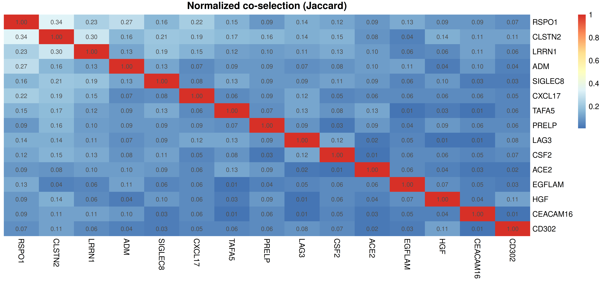
png(here::here(output_dir_figs, "Supplement_bootstrap_co_selection_frequency.png"), width = 7, height = 6.5, units = "in", res = 300)
pheatmap(stability50$co_selection[top_coselection, top_coselection, drop = FALSE], cluster_rows = FALSE, cluster_cols = FALSE,
border_color = NA, main = "Bootstrap co-selection frequency", display_numbers = TRUE, number_format = "%.2f")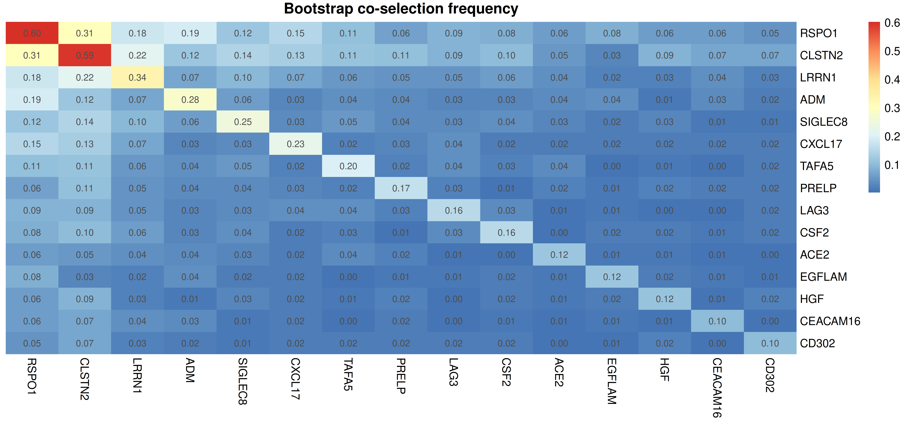
dev.off()png
3 png(here::here(output_dir_figs, "Supplement_bootstrap_co_selection_Jaccard.png"), width = 7, height = 6.5, units = "in", res = 300)
pheatmap(stability50$jaccard[top_coselection, top_coselection, drop = FALSE], cluster_rows = FALSE, cluster_cols = FALSE,
border_color = NA, main = "Normalized co-selection (Jaccard)", display_numbers = TRUE, number_format = "%.2f")
dev.off()png
3 Correlation between final panel proteins
final_panel_npx <- t(as.matrix(data_p[final_panel, p_dev$Barcode, drop = FALSE]))
final_panel_cor <- cor(final_panel_npx, method = "spearman")
write.csv(final_panel_cor, here::here(output_dir_data, "Final_panel_protein_Spearman_correlation.csv"))
pheatmap(final_panel_cor, cluster_rows = FALSE, cluster_cols = FALSE, border_color = NA,
main = "Final panel protein correlations", display_numbers = TRUE, number_format = "%.2f")
png(here::here(output_dir_figs, "Supplement_final_panel_protein_correlations.png"), width = 6, height = 5.5, units = "in", res = 300)
pheatmap(final_panel_cor, cluster_rows = FALSE, cluster_cols = FALSE, border_color = NA,
main = "Final panel protein correlations", display_numbers = TRUE, number_format = "%.2f")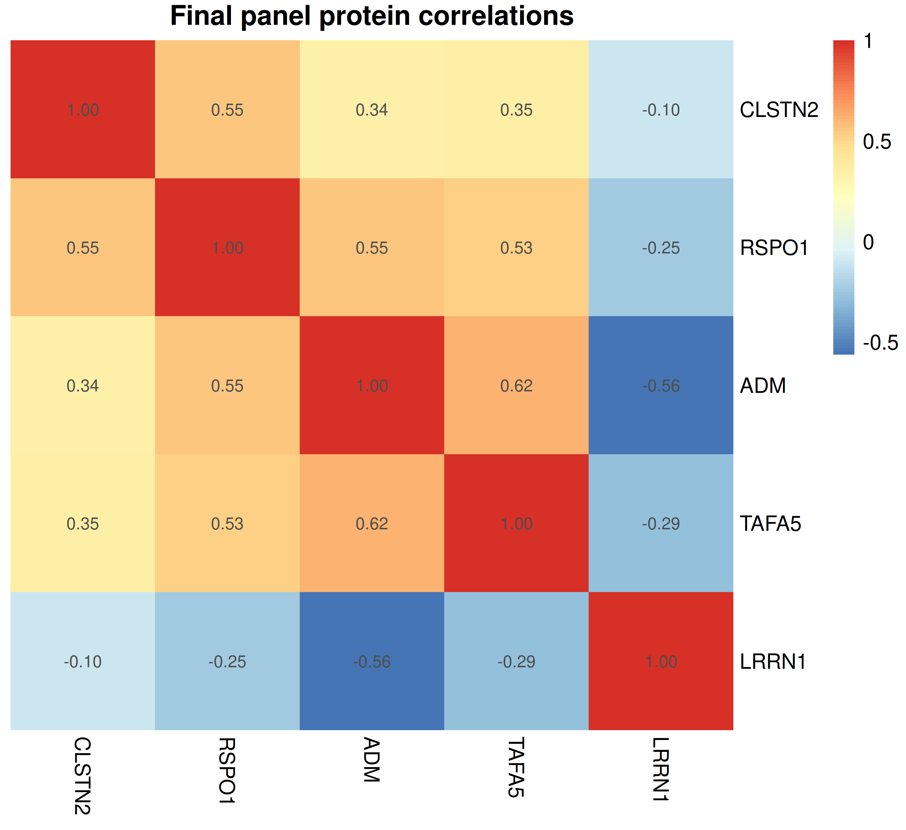
dev.off()png
3 Fit the frozen Poland model
A standard logistic model is fitted using the final selected proteins. Protein means and standard deviations, model coefficients, and score standardization are all estimated in Poland and then applied unchanged to Zurich.
fit_final_panel <- function(expr_mat, clin_df, proteins){
X <- t(as.matrix(expr_mat[proteins, clin_df$Barcode, drop = FALSE]))
mu <- colMeans(X)
sdv <- apply(X, 2, sd)
sdv[sdv == 0 | is.na(sdv)] <- 1
Z <- sweep(sweep(X, 2, mu, "-"), 2, sdv, "/")
y <- clin_df$y_impaired
fit <- suppressWarnings(glm.fit(cbind(Intercept = 1, Z), y, family = binomial()))
beta <- fit$coefficients
names(beta) <- c("Intercept", colnames(Z))
if (!fit$converged) warning("Final logistic model did not fully converge. Inspect the final panel before interpretation.")
if (any(!is.finite(beta))) stop("Non-finite coefficient in final logistic model. Inspect separation in the selected panel.")
raw_score <- as.numeric(cbind(Intercept = 1, Z) %*% beta)
score_center <- mean(raw_score)
score_scale <- sd(raw_score)
if (score_scale == 0 || is.na(score_scale)) score_scale <- 1
list(proteins = proteins, mu = mu, sd = sdv, beta = beta, score_center = score_center, score_scale = score_scale)
}
predict_final_panel <- function(model, expr_mat, barcodes){
X <- t(as.matrix(expr_mat[model$proteins, barcodes, drop = FALSE]))
Z <- sweep(sweep(X, 2, model$mu, "-"), 2, model$sd, "/")
raw_score <- as.numeric(cbind(Intercept = 1, Z) %*% model$beta)
data.frame(Barcode = barcodes, probability_impaired = plogis(raw_score), panel_score = (raw_score - model$score_center) / model$score_scale)
}
panel_model <- fit_final_panel(as.matrix(data_p), p_dev, final_panel)
pred_p_dev <- predict_final_panel(panel_model, as.matrix(data_p), p_dev$Barcode) %>%
left_join(p_dev %>% select(Barcode, Group, TAPSE_sPAP, TAPSE_group, y_impaired), by = "Barcode")
pred_z_final <- predict_final_panel(panel_model, as.matrix(data_z), z_val$Barcode) %>%
left_join(z_val %>% select(Barcode, TAPSE_sPAP, TAPSE_group, y_impaired), by = "Barcode")
# PAH-only Poland predictions are kept for downstream PAH clinical comparisons
p_pah_score <- p_pah %>% filter(!is.na(TAPSE_sPAP), Barcode %in% colnames(data_p)) %>% arrange(Barcode) %>%
mutate(y_impaired = ifelse(TAPSE_sPAP <= 0.32, 1, 0), TAPSE_group = factor(ifelse(y_impaired == 1, "Impaired", "Preserved"), levels = c("Preserved", "Impaired")))
pred_p_final <- predict_final_panel(panel_model, as.matrix(data_p), p_pah_score$Barcode) %>%
left_join(p_pah_score %>% select(Barcode, TAPSE_sPAP, TAPSE_group, y_impaired), by = "Barcode")
panel_coefficients <- data.frame(Protein = final_panel, Coefficient = panel_model$beta[final_panel], OR_per_1SD_NPX = exp(panel_model$beta[final_panel])) %>%
left_join(stability50$summary %>% select(Protein, Selection_frequency, logFC, t, P.Value, adj.P.Val), by = "Protein")
panel_coefficients Protein Coefficient OR_per_1SD_NPX Selection_frequency logFC t
1 CLSTN2 2.6127325 13.6362604 0.594 0.8608327 5.389529
2 RSPO1 1.3585662 3.8906108 0.602 0.6116502 5.366565
3 ADM 0.5657496 1.7607671 0.284 0.6913191 4.419191
4 TAFA5 0.7558358 2.1293905 0.200 0.5224038 4.271986
5 LRRN1 -2.1408536 0.1175545 0.338 -0.4299838 -3.512639
P.Value adj.P.Val
1 9.384115e-07 0.0005306546
2 1.026411e-06 0.0005306546
3 3.615276e-05 0.0053402786
4 6.113554e-05 0.0063214150
5 7.896941e-04 0.0214879934write.csv(panel_coefficients, here::here(output_dir_data, "Final_panel_coefficients.csv"), row.names = FALSE)
qs_save(panel_model, here::here(output_dir_data, "Final_panel_model_frozen_from_Poland.qs2"))Development and external validation performance
poland_oof_prob <- lasso_cv$pred_avg[, paste0("k", lasso_k)]
roc_panel_p <- pROC::roc(p_dev$y_impaired, poland_oof_prob, levels = c(0, 1), direction = "<", quiet = TRUE)
roc_panel_z <- pROC::roc(pred_z_final$y_impaired, pred_z_final$probability_impaired, levels = c(0, 1), direction = "<", quiet = TRUE, ci = TRUE)
roc_panel_p_apparent <- pROC::roc(pred_p_dev$y_impaired, pred_p_dev$probability_impaired, levels = c(0, 1), direction = "<", quiet = TRUE)
cv_selected_summary <- lasso_cv$summary %>% filter(k == lasso_k)
panel_auc <- data.frame(
Cohort = c("Poland nested CV", "Poland apparent", "Zurich external"),
AUC = c(cv_selected_summary$mean_AUC, as.numeric(pROC::auc(roc_panel_p_apparent)), as.numeric(pROC::auc(roc_panel_z))),
AUC_low = c(cv_selected_summary$AUC_low, NA, as.numeric(pROC::ci.auc(roc_panel_z)[1])),
AUC_high = c(cv_selected_summary$AUC_high, NA, as.numeric(pROC::ci.auc(roc_panel_z)[3]))
)
panel_auc Cohort AUC AUC_low AUC_high
1 Poland nested CV 0.7940278 0.7257407 0.8542824
2 Poland apparent 0.9759259 NA NA
3 Zurich external 0.9416667 0.8502815 1.0000000write.csv(panel_auc, here::here(output_dir_data, "Final_panel_AUC_validation.csv"), row.names = FALSE)score_validation_df <- bind_rows(
data.frame(Cohort = "Poland development", TAPSE_group = pred_p_dev$TAPSE_group, Score = pred_p_dev$panel_score),
data.frame(Cohort = "Zurich external", TAPSE_group = pred_z_final$TAPSE_group, Score = pred_z_final$panel_score)
)
p_score_validation <- ggplot(score_validation_df, aes(TAPSE_group, Score, fill = TAPSE_group)) +
geom_boxplot(outlier.shape = NA, alpha = 0.75) + geom_jitter(width = 0.12, size = 1.7, alpha = 0.7) + facet_wrap(~Cohort) +
scale_fill_manual(values = cols_tapse) + labs(x = NULL, y = "Impaired RV-PA coupling protein score") +
theme_classic(base_size = 11) + theme(legend.position = "none")
roc_panel_df <- bind_rows(
data.frame(FPR = 1 - roc_panel_p$specificities, Sensitivity = roc_panel_p$sensitivities, Cohort = "Poland nested CV"),
data.frame(FPR = 1 - roc_panel_z$specificities, Sensitivity = roc_panel_z$sensitivities, Cohort = "Zurich external")
) %>% arrange(Cohort, FPR, Sensitivity)
p_panel_roc <- ggplot(roc_panel_df, aes(FPR, Sensitivity, color = Cohort)) +
geom_abline(slope = 1, intercept = 0, linetype = 2, color = "grey75") + geom_step(direction = "hv", linewidth = 0.9) +
scale_color_manual(values = c("Poland nested CV" = "#A63A2A", "Zurich external" = "#004C8C")) + coord_equal() +
labs(x = "1 - Specificity", y = "Sensitivity", title = "Impaired RV-PA coupling (TAPSE/sPAP <= 0.32)") +
theme_classic(base_size = 11) + theme(legend.position = "bottom")
p_score_validation | p_panel_roc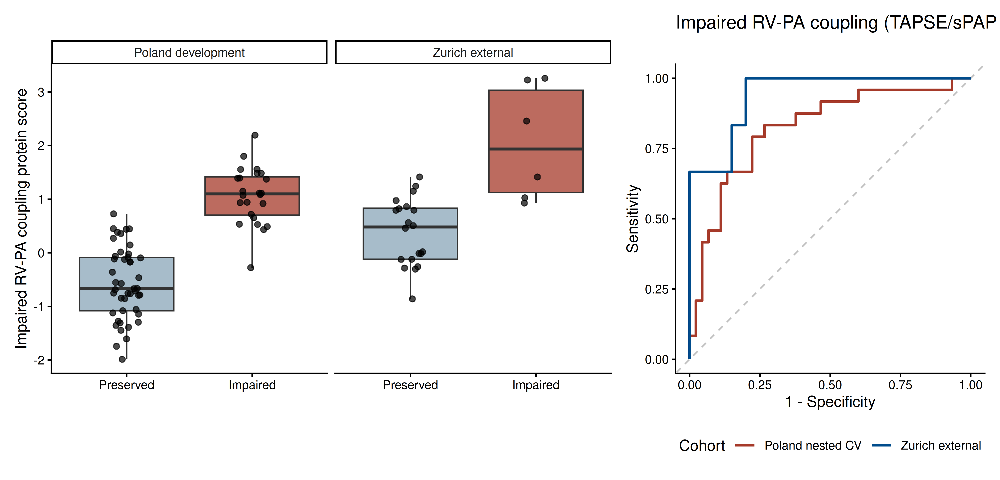
Score across SSc-noPAH, preserved PAH and impaired PAH
pred_p_all <- predict_final_panel(panel_model, as.matrix(data_p), p_all$Barcode) %>% left_join(p_all %>% select(Barcode, Group, TAPSE_sPAP), by = "Barcode")
pred_z_all <- predict_final_panel(panel_model, as.matrix(data_z), z_all$Barcode) %>% left_join(z_all %>% select(Barcode, Group, TAPSE_sPAP), by = "Barcode")
score_group_df <- bind_rows(pred_p_all %>% mutate(Cohort = "Poland"), pred_z_all %>% mutate(Cohort = "Zurich")) %>%
mutate(Group3 = case_when(
Group == "SSc-noPAH" ~ "SSc-noPAH",
Group == "SSc-PAH" & TAPSE_sPAP > 0.32 ~ "SSc-PAH preserved",
Group == "SSc-PAH" & TAPSE_sPAP <= 0.32 ~ "SSc-PAH impaired",
TRUE ~ NA_character_),
Group3 = factor(Group3, levels = c("SSc-noPAH", "SSc-PAH preserved", "SSc-PAH impaired"))) %>% filter(!is.na(Group3))
p_score_three <- ggplot(score_group_df, aes(Group3, panel_score, fill = Group3)) + geom_boxplot(outlier.shape = NA, alpha = 0.75) +
geom_jitter(width = 0.12, size = 1.5, alpha = 0.7) + facet_wrap(~Cohort) +
scale_fill_manual(values = c("SSc-noPAH" = "#8AA6B8", "SSc-PAH preserved" = "#BDBDBD", "SSc-PAH impaired" = "#A63A2A")) +
labs(x = NULL, y = "Impaired RV-PA coupling protein score") + theme_classic(base_size = 11) +
theme(legend.position = "none", axis.text.x = element_text(angle = 20, hjust = 1))
p_score_three
Figure4 <- (p_panel_size | p_stability) / (p_score_three | p_panel_roc) + plot_annotation(tag_levels = "A")
Figure4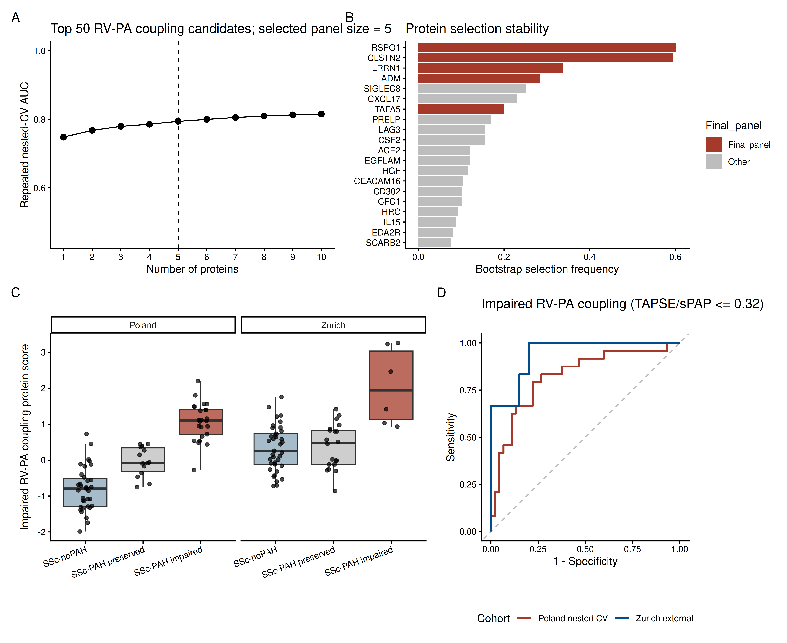
ggsave(here::here(output_dir_figs, "Figure4_panel_development_validation.png"), Figure4, width = 11, height = 9, dpi = 300)
ggsave(here::here(output_dir_figs, "Supplement_score_binary_validation.png"), p_score_validation, width = 9, height = 4.8, dpi = 300)Individual selected proteins vs continuous TAPSE/sPAP
make_panel_long <- function(expr_mat, clin_df, cohort){
x <- t(as.matrix(expr_mat[final_panel, clin_df$Barcode, drop = FALSE])) %>% as.data.frame() %>% rownames_to_column("Barcode")
clin_df %>% select(Barcode, TAPSE_sPAP) %>% left_join(x, by = "Barcode") %>%
pivot_longer(all_of(final_panel), names_to = "Protein", values_to = "NPX") %>% mutate(Cohort = cohort)
}
panel_long <- bind_rows(
make_panel_long(data_p, p_pah_score, "Poland"),
make_panel_long(data_z, z_val, "Zurich")
)
panel_protein_cor <- panel_long %>% group_by(Cohort, Protein) %>% summarise(
n = sum(is.finite(TAPSE_sPAP) & is.finite(NPX)), rho = cor(TAPSE_sPAP, NPX, method = "spearman", use = "complete.obs"),
p = suppressWarnings(cor.test(TAPSE_sPAP, NPX, method = "spearman", exact = FALSE)$p.value), .groups = "drop")
panel_protein_cor# A tibble: 10 × 5
Cohort Protein n rho p
<chr> <chr> <int> <dbl> <dbl>
1 Poland ADM 38 -0.436 0.00619
2 Poland CLSTN2 38 -0.401 0.0126
3 Poland LRRN1 38 0.157 0.346
4 Poland RSPO1 38 -0.534 0.000561
5 Poland TAFA5 38 -0.487 0.00194
6 Zurich ADM 26 -0.475 0.0143
7 Zurich CLSTN2 26 -0.284 0.159
8 Zurich LRRN1 26 0.306 0.128
9 Zurich RSPO1 26 -0.539 0.00453
10 Zurich TAFA5 26 -0.554 0.00332 write.csv(panel_protein_cor, here::here(output_dir_data, "Supplement_individual_panel_protein_correlations.csv"), row.names = FALSE)
panel_cor_labels <- panel_protein_cor %>% mutate(label = paste0("rho = ", round(rho, 2), "\np = ", signif(p, 2)))
p_panel_individual <- ggplot(panel_long, aes(TAPSE_sPAP, NPX)) + geom_point(size = 1.4, alpha = 0.75) +
geom_smooth(method = "lm", se = FALSE, linewidth = 0.6) + facet_grid(Cohort ~ Protein, scales = "free_y") +
geom_text(data = panel_cor_labels, aes(x = -Inf, y = Inf, label = label), inherit.aes = FALSE, hjust = -0.05, vjust = 1.1, size = 3) +
labs(x = "TAPSE/sPAP", y = "NPX") + theme_classic(base_size = 10)
p_panel_individual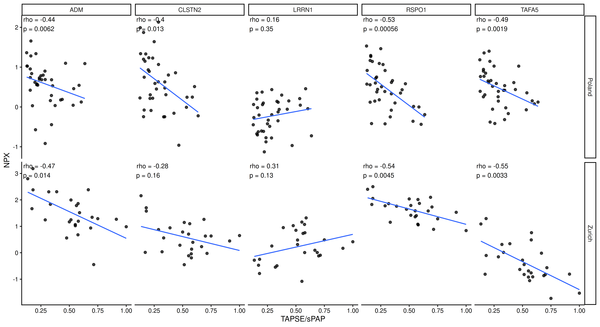
ggsave(here::here(output_dir_figs, "Supplement_individual_panel_proteins_TAPSE_sPAP.png"), p_panel_individual, width = 11, height = 6, dpi = 300)Zurich within-cohort scaling sensitivity
Xz_panel <- t(as.matrix(data_z[final_panel, z_val$Barcode, drop = FALSE]))
mu_z_panel <- colMeans(Xz_panel)
sd_z_panel <- apply(Xz_panel, 2, sd)
sd_z_panel[sd_z_panel == 0 | is.na(sd_z_panel)] <- 1
Zz_panel <- sweep(sweep(Xz_panel, 2, mu_z_panel, "-"), 2, sd_z_panel, "/")
raw_z_within <- as.numeric(cbind(Intercept = 1, Zz_panel) %*% panel_model$beta)
prob_z_within <- plogis(raw_z_within)
roc_z_within <- pROC::roc(z_val$y_impaired, prob_z_within, levels = c(0, 1), direction = "<", quiet = TRUE)
within_scaling_results <- data.frame(Approach = c("Frozen Poland scaling", "Zurich within-cohort scaling"),
AUC = c(as.numeric(pROC::auc(roc_panel_z)), as.numeric(pROC::auc(roc_z_within))))
within_scaling_results Approach AUC
1 Frozen Poland scaling 0.9416667
2 Zurich within-cohort scaling 0.9333333write.csv(within_scaling_results, here::here(output_dir_data, "Zurich_scaling_sensitivity.csv"), row.names = FALSE)Clinical associations of the final protein score
Prepare score and clinical data
score_p <- pred_p_final %>% select(Barcode, panel_score) %>% left_join(p_pah_score, by = "Barcode") %>% mutate(Cohort = "Poland")
score_z <- pred_z_final %>% select(Barcode, panel_score) %>% left_join(z_val, by = "Barcode") %>% mutate(Cohort = "Zurich")
score_both <- bind_rows(score_p, score_z)Score associations with clinical variables
clinical_vars <- c("TAPSE_sPAP", "TAPSE", "sPAP", "mPAP", "PVR", "CI", "NTproBNP_common", "SixMWD", "FVC_pred_common", "DLCO_pred_common", "Creatinine_mg_dl", "mRSS_common", "COMPERA_number_common", "Age")
clinical_labels <- c(
TAPSE_sPAP = "TAPSE/sPAP", TAPSE = "TAPSE", sPAP = "sPAP", mPAP = "mPAP", PVR = "PVR", CI = "Cardiac index",
NTproBNP_common = "NT-proBNP", SixMWD = "6MWD", FVC_pred_common = "FVC", DLCO_pred_common = "DLCO",
Creatinine_mg_dl = "Creatinine", mRSS_common = "mRSS", COMPERA_number_common = "COMPERA", Age = "Age"
)
clinical_cor_list <- list()
counter <- 1
for (cohort in c("Poland", "Zurich")){
dd <- score_both %>% filter(Cohort == cohort)
for (v in clinical_vars){
ok <- is.finite(dd$panel_score) & is.finite(as.numeric(dd[[v]]))
if (sum(ok) >= 5){
ct <- suppressWarnings(cor.test(dd$panel_score[ok], as.numeric(dd[[v]])[ok], method = "spearman", exact = FALSE))
clinical_cor_list[[counter]] <- data.frame(Cohort = cohort, Variable = v, n = sum(ok), rho = unname(ct$estimate), p = ct$p.value)
} else {
clinical_cor_list[[counter]] <- data.frame(Cohort = cohort, Variable = v, n = sum(ok), rho = NA, p = NA)
}
counter <- counter + 1
}
}
clinical_cor <- bind_rows(clinical_cor_list) %>% group_by(Cohort) %>% mutate(FDR = p.adjust(p, method = "BH")) %>% ungroup() %>%
mutate(Label = clinical_labels[Variable])
clinical_cor# A tibble: 28 × 7
Cohort Variable n rho p FDR Label
<chr> <chr> <int> <dbl> <dbl> <dbl> <chr>
1 Poland TAPSE_sPAP 38 -0.716 0.000000423 0.00000275 TAPSE/sPAP
2 Poland TAPSE 38 -0.759 0.0000000345 0.000000448 TAPSE
3 Poland sPAP 38 0.512 0.00101 0.00329 sPAP
4 Poland mPAP 35 0.436 0.00890 0.0171 mPAP
5 Poland PVR 34 0.515 0.00183 0.00475 PVR
6 Poland CI 35 -0.210 0.227 0.268 Cardiac index
7 Poland NTproBNP_common 38 0.590 0.0000964 0.000418 NT-proBNP
8 Poland SixMWD 37 -0.294 0.0772 0.111 6MWD
9 Poland FVC_pred_common 33 -0.140 0.437 0.473 FVC
10 Poland DLCO_pred_common 31 -0.251 0.174 0.226 DLCO
# ℹ 18 more rowswrite.csv(clinical_cor, here::here(output_dir_data, "Final_score_clinical_correlations.csv"), row.names = FALSE)p_clinical_heatmap <- clinical_cor %>%
mutate(Label = factor(Label, levels = rev(unname(clinical_labels)))) %>%
ggplot(aes(Cohort, Label, fill = rho)) + geom_tile(color = "white") +
geom_text(aes(label = ifelse(is.na(rho), "", sprintf("%.2f", rho))), size = 3.2) +
scale_fill_gradient2(low = "#2166AC", mid = "white", high = "#B2182B", midpoint = 0, limits = c(-1, 1), na.value = "grey90") +
labs(x = NULL, y = NULL, fill = "Spearman rho", title = "Clinical associations of the protein score") + theme_classic(base_size = 11)
p_clinical_heatmap
ggsave(here::here(output_dir_figs, "Clinical_association_heatmap.png"), p_clinical_heatmap, width = 5.8, height = 6.2, dpi = 300)ILD and sex
score_binary_assoc <- list()
counter <- 1
for (cohort in c("Poland", "Zurich")){
dd <- score_both %>% filter(Cohort == cohort)
dd_ild <- dd %>% filter(ILD_common %in% c("yes", "no"), !is.na(panel_score))
if (nrow(dd_ild) >= 5 && length(unique(dd_ild$ILD_common)) == 2){
wt <- wilcox.test(panel_score ~ ILD_common, data = dd_ild)
score_binary_assoc[[counter]] <- data.frame(Cohort = cohort, Variable = "ILD", n = nrow(dd_ild), p = wt$p.value)
counter <- counter + 1
}
dd_sex <- dd %>% filter(!is.na(Sex), !is.na(panel_score))
if (nrow(dd_sex) >= 5 && length(unique(dd_sex$Sex)) == 2){
wt <- wilcox.test(panel_score ~ Sex, data = dd_sex)
score_binary_assoc[[counter]] <- data.frame(Cohort = cohort, Variable = "Sex", n = nrow(dd_sex), p = wt$p.value)
counter <- counter + 1
}
}
score_binary_assoc <- bind_rows(score_binary_assoc)
score_binary_assoc Cohort Variable n p
1 Poland ILD 35 0.8573452
2 Poland Sex 38 0.3715845
3 Zurich ILD 26 0.5267107
4 Zurich Sex 26 0.4094862write.csv(score_binary_assoc, here::here(output_dir_data, "Final_score_binary_clinical_associations.csv"), row.names = FALSE)COMPERA and mortality - 3-year follow-up
This section uses administrative censoring at 3 years. Deaths occurring after 3 years are treated as censored at 3 years. Patients who are alive with shorter available follow-up remain censored at their last available follow-up.
followup_limit_days <- 3 * 365.25
cat("Follow-up horizon:", followup_limit_days, "days (3 years)\n")Follow-up horizon: 1095.75 days (3 years)Protein score across COMPERA strata
This is a baseline cross-sectional analysis and therefore does not require time restriction.
score_compera_df <- score_both %>%
filter(!is.na(COMPERA), !is.na(COMPERA_number_common), !is.na(panel_score))
compera_cor <- score_compera_df %>%
group_by(Cohort) %>%
summarise(
n = n(),
rho = cor(COMPERA_number_common, panel_score, method = "spearman"),
p = suppressWarnings(cor.test(COMPERA_number_common, panel_score, method = "spearman", exact = FALSE)$p.value),
.groups = "drop"
)
compera_cor# A tibble: 2 × 4
Cohort n rho p
<chr> <int> <dbl> <dbl>
1 Poland 38 0.417 0.00921
2 Zurich 26 0.622 0.000686p_score_compera <- ggplot(score_compera_df, aes(COMPERA, panel_score, fill = COMPERA)) +
geom_boxplot(outlier.shape = NA, alpha = 0.75) +
geom_jitter(width = 0.12, size = 1.7, alpha = 0.7) +
facet_wrap(~Cohort) +
scale_fill_manual(values = cols_compera, drop = FALSE) +
labs(x = "COMPERA risk stratum", y = "RV dysfunction protein score") +
theme_classic(base_size = 11) +
theme(legend.position = "none", axis.text.x = element_text(angle = 30, hjust = 1))
p_score_compera
ggsave(here::here(output_dir_figs, "Score_across_COMPERA_both_cohorts.png"),
p_score_compera, width = 9, height = 4.8, dpi = 300)Zurich 3-year survival data
df_surv_z_3y <- score_z %>%
mutate(
time_days_original = as.numeric(DeathDAYS),
event_raw = tolower(trimws(as.character(Death))),
event_original = case_when(
event_raw %in% c("yes", "y", "true", "1", "dead", "death") ~ 1,
event_raw %in% c("no", "n", "false", "0", "alive") ~ 0,
TRUE ~ NA_real_
)
) %>%
filter(
!is.na(time_days_original),
!is.na(event_original),
!is.na(COMPERA_number_common),
!is.na(panel_score)
) %>%
mutate(
time_days_3y = pmin(time_days_original, followup_limit_days),
event_3y = ifelse(event_original == 1 & time_days_original <= followup_limit_days, 1, 0)
)
survival_3y_summary <- df_surv_z_3y %>%
summarise(
n = n(),
deaths_total_followup = sum(event_original),
deaths_within_3y = sum(event_3y),
censored_before_3y = sum(event_original == 0 & time_days_original < followup_limit_days),
followed_at_least_3y = sum(time_days_original >= followup_limit_days)
)
survival_3y_summary n deaths_total_followup deaths_within_3y censored_before_3y
1 25 8 4 5
followed_at_least_3y
1 16cat("3-year survival analysis n =", nrow(df_surv_z_3y),
"deaths within 3 years =", sum(df_surv_z_3y$event_3y), "\n")3-year survival analysis n = 25 deaths within 3 years = 4 write.csv(survival_3y_summary,
here::here(output_dir_data, "Survival_3year_summary_Zurich.csv"),
row.names = FALSE)Cox models - 3 years
m_compera_3y <- coxph(
Surv(time_days_3y, event_3y) ~ COMPERA_number_common,
data = df_surv_z_3y, x = TRUE
)
m_score_3y <- coxph(
Surv(time_days_3y, event_3y) ~ panel_score,
data = df_surv_z_3y, x = TRUE
)
m_combined_3y <- coxph(
Surv(time_days_3y, event_3y) ~ COMPERA_number_common + panel_score,
data = df_surv_z_3y, x = TRUE
)
c_compera_3y <- unname(summary(m_compera_3y)$concordance[1])
c_score_3y <- unname(summary(m_score_3y)$concordance[1])
c_combined_3y <- unname(summary(m_combined_3y)$concordance[1])
lrt_score_added_3y <- anova(m_compera_3y, m_combined_3y, test = "LRT")
lrt_score_added_3yAnalysis of Deviance Table
Cox model: response is Surv(time_days_3y, event_3y)
Model 1: ~ COMPERA_number_common
Model 2: ~ COMPERA_number_common + panel_score
loglik Chisq Df Pr(>|Chi|)
1 -8.5543
2 -7.6616 1.7854 1 0.1815cox_table_3y <- bind_rows(
tidy(m_compera_3y, exponentiate = TRUE, conf.int = TRUE) %>% mutate(Model = "COMPERA"),
tidy(m_score_3y, exponentiate = TRUE, conf.int = TRUE) %>% mutate(Model = "Protein score"),
tidy(m_combined_3y, exponentiate = TRUE, conf.int = TRUE) %>% mutate(Model = "COMPERA + protein score")
)
cox_table_3y# A tibble: 4 × 8
term estimate std.error statistic p.value conf.low conf.high Model
<chr> <dbl> <dbl> <dbl> <dbl> <dbl> <dbl> <chr>
1 COMPERA_number_… 5.80 0.926 1.90 0.0577 0.944 35.6 COMP…
2 panel_score 3.06 0.455 2.46 0.0140 1.25 7.46 Prot…
3 COMPERA_number_… 4.55 0.986 1.53 0.125 0.657 31.4 COMP…
4 panel_score 1.92 0.488 1.33 0.182 0.736 4.99 COMP…write.csv(cox_table_3y,
here::here(output_dir_data, "Cox_models_Zurich_3year.csv"),
row.names = FALSE)Bootstrap C-index and C-index differences - 3 years
set.seed(30)
B_surv_3y <- 2000
boot_cindex_3y <- matrix(
NA_real_,
nrow = B_surv_3y,
ncol = 3,
dimnames = list(NULL, c("COMPERA", "Score", "Combined"))
)
for (b in seq_len(B_surv_3y)){
idx <- sample(seq_len(nrow(df_surv_z_3y)), replace = TRUE)
dd <- df_surv_z_3y[idx, , drop = FALSE]
if (length(unique(dd$event_3y)) < 2) next
tmp <- tryCatch({
m0 <- coxph(Surv(time_days_3y, event_3y) ~ COMPERA_number_common, data = dd)
m1 <- coxph(Surv(time_days_3y, event_3y) ~ panel_score, data = dd)
m2 <- coxph(Surv(time_days_3y, event_3y) ~ COMPERA_number_common + panel_score, data = dd)
c(
unname(summary(m0)$concordance[1]),
unname(summary(m1)$concordance[1]),
unname(summary(m2)$concordance[1])
)
}, error = function(e) c(NA, NA, NA))
boot_cindex_3y[b, ] <- tmp
}
cindex_table_3y <- data.frame(
Model = c("COMPERA", "Protein score", "COMPERA + protein score"),
C_index = c(c_compera_3y, c_score_3y, c_combined_3y),
CI_low = apply(boot_cindex_3y, 2, quantile, probs = 0.025, na.rm = TRUE),
CI_high = apply(boot_cindex_3y, 2, quantile, probs = 0.975, na.rm = TRUE)
)
boot_delta_score_3y <- boot_cindex_3y[, "Score"] - boot_cindex_3y[, "COMPERA"]
boot_delta_combined_3y <- boot_cindex_3y[, "Combined"] - boot_cindex_3y[, "COMPERA"]
delta_cindex_table_3y <- data.frame(
Comparison = c(
"Protein score - COMPERA",
"COMPERA + protein score - COMPERA"
),
Delta_C = c(
c_score_3y - c_compera_3y,
c_combined_3y - c_compera_3y
),
CI_low = c(
quantile(boot_delta_score_3y, 0.025, na.rm = TRUE),
quantile(boot_delta_combined_3y, 0.025, na.rm = TRUE)
),
CI_high = c(
quantile(boot_delta_score_3y, 0.975, na.rm = TRUE),
quantile(boot_delta_combined_3y, 0.975, na.rm = TRUE)
)
)
cindex_table_3y Model C_index CI_low CI_high
COMPERA COMPERA 0.8705882 0.7197500 0.9621212
Score Protein score 0.7647059 0.5300211 1.0000000
Combined COMPERA + protein score 0.8941176 0.7901583 1.0000000delta_cindex_table_3y Comparison Delta_C CI_low CI_high
1 Protein score - COMPERA -0.10588235 -0.37500000 0.2548696
2 COMPERA + protein score - COMPERA 0.02352941 -0.05153313 0.2556544write.csv(cindex_table_3y,
here::here(output_dir_data, "Cindex_models_Zurich_3year.csv"),
row.names = FALSE)
write.csv(delta_cindex_table_3y,
here::here(output_dir_data, "Cindex_differences_Zurich_3year.csv"),
row.names = FALSE)
cox.zph(m_combined_3y) chisq df p
COMPERA_number_common 1.00 1 0.317
panel_score 5.33 1 0.021
GLOBAL 6.93 2 0.031Prognostic plots - 3 years
forest_df_3y <- bind_rows(
tidy(m_compera_3y, exponentiate = TRUE, conf.int = TRUE) %>% mutate(Model = "COMPERA only"),
tidy(m_score_3y, exponentiate = TRUE, conf.int = TRUE) %>% mutate(Model = "Score only"),
tidy(m_combined_3y, exponentiate = TRUE, conf.int = TRUE) %>% mutate(Model = "Combined")
) %>%
mutate(
Label = case_when(
Model == "COMPERA only" & term == "COMPERA_number_common" ~ "COMPERA",
Model == "Score only" & term == "panel_score" ~ "Protein score",
Model == "Combined" & term == "COMPERA_number_common" ~ "COMPERA | combined",
Model == "Combined" & term == "panel_score" ~ "Protein score | combined",
TRUE ~ term
)
)
p_cox_forest_3y <- ggplot(forest_df_3y, aes(estimate, Label)) +
geom_vline(xintercept = 1, linetype = 2, color = "grey65") +
geom_errorbarh(aes(xmin = conf.low, xmax = conf.high), height = 0.18) +
geom_point(size = 2.6) +
scale_x_log10() +
labs(x = "Hazard ratio", y = NULL, title = "3-year all-cause mortality") +
theme_classic(base_size = 11)
p_cox_forest_3y
ggsave(here::here(output_dir_figs, "Cox_forest_Zurich_3year.png"),
p_cox_forest_3y, width = 6.8, height = 4.8, dpi = 300)p_cindex_3y <- cindex_table_3y %>%
mutate(Model = factor(Model, levels = rev(Model))) %>%
ggplot(aes(C_index, Model)) +
geom_errorbarh(aes(xmin = CI_low, xmax = CI_high), height = 0.15) +
geom_point(size = 3) +
coord_cartesian(xlim = c(0.5, 1)) +
labs(x = "C-index", y = NULL, title = "3-year model discrimination") +
theme_classic(base_size = 11)
p_delta_cindex_3y <- delta_cindex_table_3y %>%
mutate(Comparison = factor(Comparison, levels = rev(Comparison))) %>%
ggplot(aes(Delta_C, Comparison)) +
geom_vline(xintercept = 0, linetype = 2, color = "grey65") +
geom_errorbarh(aes(xmin = CI_low, xmax = CI_high), height = 0.15) +
geom_point(size = 3) +
labs(x = "Delta C-index", y = NULL, title = "Difference from COMPERA") +
theme_classic(base_size = 11)
p_cindex_3y + p_delta_cindex_3y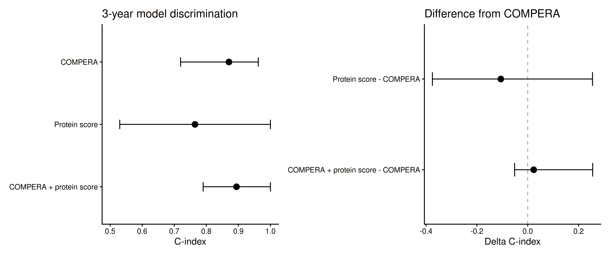
ggsave(here::here(output_dir_figs, "Cindex_and_delta_Zurich_3year.png"),
p_cindex_3y + p_delta_cindex_3y, width = 10, height = 4.2, dpi = 300)Figure5_3y <- (p_score_compera | p_clinical_heatmap) /
(p_cox_forest_3y | p_cindex_3y) /
(p_delta_cindex_3y | plot_spacer()) +
plot_annotation(tag_levels = "A")
Figure5_3y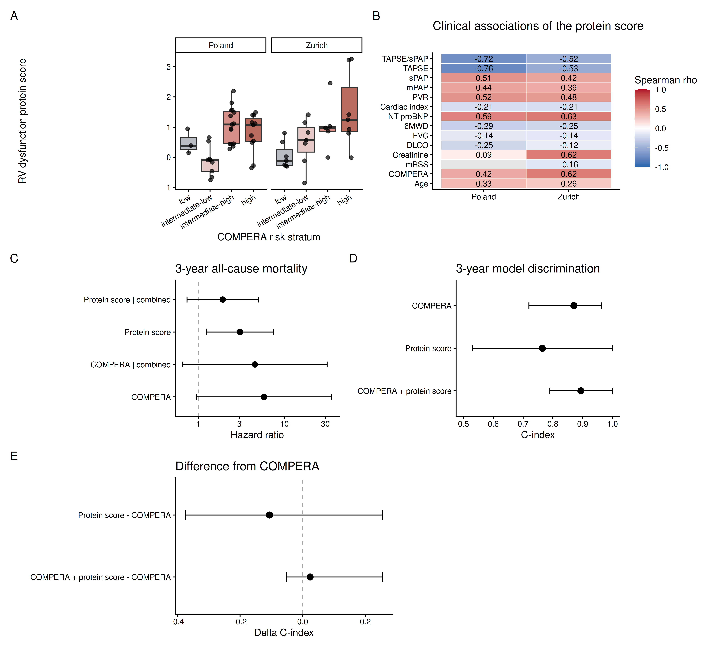
ggsave(here::here(output_dir_figs, "Figure5_COMPERA_mortality_3year.png"),
Figure5_3y, width = 11, height = 10, dpi = 300)Kaplan-Meier plot - 3 years
km_df_3y <- df_surv_z_3y %>%
mutate(
score_group = ifelse(panel_score >= median(panel_score), "High score", "Low score"),
score_group = factor(score_group, levels = c("Low score", "High score"))
)
km_fit_3y <- survfit(
Surv(time_days_3y, event_3y) ~ score_group,
data = km_df_3y
)
logrank_p_3y <- 1 - pchisq(
survdiff(Surv(time_days_3y, event_3y) ~ score_group, data = km_df_3y)$chisq,
df = 1
)
plot(
km_fit_3y,
col = c("#004C8C", "#A63A2A"),
lwd = 2,
xlim = c(0, followup_limit_days),
xaxt = "n",
xlab = "Follow-up (years)",
ylab = "Survival probability",
main = "3-year survival by protein score"
)
axis(
1,
at = c(0, 365.25, 2 * 365.25, 3 * 365.25),
labels = c("0", "1", "2", "3")
)
legend(
"bottomleft",
legend = levels(km_df_3y$score_group),
col = c("#004C8C", "#A63A2A"),
lwd = 2,
bty = "n"
)
mtext(
paste0("Log-rank p = ", signif(logrank_p_3y, 3)),
side = 3, adj = 1, line = 0.2, cex = 0.9
)
png(
here::here(output_dir_figs, "Supplement_KM_score_Zurich_3year.png"),
width = 5.8, height = 4.8, units = "in", res = 300
)
plot(
km_fit_3y,
col = c("#004C8C", "#A63A2A"),
lwd = 2,
xlim = c(0, followup_limit_days),
xaxt = "n",
xlab = "Follow-up (years)",
ylab = "Survival probability",
main = "3-year survival by protein score"
)
axis(
1,
at = c(0, 365.25, 2 * 365.25, 3 * 365.25),
labels = c("0", "1", "2", "3")
)
legend(
"bottomleft",
legend = levels(km_df_3y$score_group),
col = c("#004C8C", "#A63A2A"),
lwd = 2,
bty = "n"
)
mtext(
paste0("Log-rank p = ", signif(logrank_p_3y, 3)),
side = 3, adj = 1, line = 0.2, cex = 0.9
)
dev.off()png
2 Supplementary: protein score and NT-proBNP
This section compares the final protein score with NT-proBNP as a marker of impaired RV-PA coupling and explores whether the protein score can replace or complement NT-proBNP within the clinical components used by COMPERA 2.0. These analyses are exploratory and are intended for supplementary material.
Protein score and NT-proBNP vs TAPSE/sPAP
For direct comparison, the same SSc-PAH patients with available TAPSE/sPAP, protein score and NT-proBNP are used for both biomarkers.
rvpa_biomarker_df <- bind_rows(
score_p %>% transmute(Cohort = "Poland", Barcode, TAPSE_sPAP, panel_score, NTproBNP_common),
score_z %>% transmute(Cohort = "Zurich", Barcode, TAPSE_sPAP, panel_score, NTproBNP_common)
) %>%
filter(!is.na(TAPSE_sPAP), !is.na(panel_score), !is.na(NTproBNP_common), NTproBNP_common > 0) %>%
mutate(y_impaired = ifelse(TAPSE_sPAP <= 0.32, 1, 0), log2_NTproBNP = log2(NTproBNP_common))
table(rvpa_biomarker_df$Cohort, rvpa_biomarker_df$y_impaired)
0 1
Poland 14 24
Zurich 20 6nt_cor_results <- list()
counter <- 1
for (cohort in c("Poland", "Zurich")){
dd <- rvpa_biomarker_df %>% filter(Cohort == cohort)
ct_score <- cor.test(dd$TAPSE_sPAP, dd$panel_score, method = "spearman", exact = FALSE)
ct_nt <- cor.test(dd$TAPSE_sPAP, dd$log2_NTproBNP, method = "spearman", exact = FALSE)
nt_cor_results[[counter]] <- data.frame(Cohort = cohort, Biomarker = "Protein score", n = nrow(dd), rho = unname(ct_score$estimate), p = ct_score$p.value)
counter <- counter + 1
nt_cor_results[[counter]] <- data.frame(Cohort = cohort, Biomarker = "NT-proBNP", n = nrow(dd), rho = unname(ct_nt$estimate), p = ct_nt$p.value)
counter <- counter + 1
}
nt_cor_results <- bind_rows(nt_cor_results)
nt_cor_results Cohort Biomarker n rho p
1 Poland Protein score 38 -0.7164195 4.233870e-07
2 Poland NT-proBNP 38 -0.7874378 4.494784e-09
3 Zurich Protein score 26 -0.5180373 6.710864e-03
4 Zurich NT-proBNP 26 -0.6233544 6.689390e-04write.csv(nt_cor_results, here::here(output_dir_data, "Supplement_protein_score_vs_NTproBNP_correlations.csv"), row.names = FALSE)nt_biomarker_long <- bind_rows(
rvpa_biomarker_df %>% transmute(Cohort, Barcode, TAPSE_sPAP, Biomarker = "Protein score", Value = panel_score),
rvpa_biomarker_df %>% transmute(Cohort, Barcode, TAPSE_sPAP, Biomarker = "NT-proBNP", Value = log2_NTproBNP)
)
nt_cor_labels <- nt_cor_results %>% mutate(label = paste0("rho = ", round(rho, 2), "\np = ", signif(p, 2)))
p_nt_cor <- ggplot(nt_biomarker_long, aes(TAPSE_sPAP, Value)) +
geom_point(size = 1.6, alpha = 0.75) + geom_smooth(method = "lm", se = FALSE, linewidth = 0.7) +
facet_grid(Cohort ~ Biomarker, scales = "free_y") +
geom_text(data = nt_cor_labels, aes(x = -Inf, y = Inf, label = label), inherit.aes = FALSE, hjust = -0.05, vjust = 1.1, size = 3.4) +
labs(x = "TAPSE/sPAP", y = "Protein score / log2 NT-proBNP", title = "Association with TAPSE/sPAP") +
theme_classic(base_size = 11)
p_nt_cor
ggsave(here::here(output_dir_figs, "Supplement_NTproBNP_TAPSE_sPAP_correlations.png"), p_nt_cor, width = 9.5, height = 6.2, dpi = 300)Discrimination of impaired RV-PA coupling
nt_auc_results <- list()
nt_delong_results <- list()
nt_roc_score <- list()
nt_roc_nt <- list()
for (cohort in c("Poland", "Zurich")){
dd <- rvpa_biomarker_df %>% filter(Cohort == cohort)
roc_score <- pROC::roc(dd$y_impaired, dd$panel_score, levels = c(0, 1), direction = "<", quiet = TRUE, ci = TRUE)
roc_nt <- pROC::roc(dd$y_impaired, dd$NTproBNP_common, levels = c(0, 1), direction = "<", quiet = TRUE, ci = TRUE)
ci_score <- pROC::ci.auc(roc_score)
ci_nt <- pROC::ci.auc(roc_nt)
test_auc <- pROC::roc.test(roc_score, roc_nt, paired = TRUE, method = "delong")
nt_auc_results[[cohort]] <- bind_rows(
data.frame(Cohort = cohort, Biomarker = "Protein score", n = nrow(dd), AUC = as.numeric(pROC::auc(roc_score)), CI_low = as.numeric(ci_score[1]), CI_high = as.numeric(ci_score[3])),
data.frame(Cohort = cohort, Biomarker = "NT-proBNP", n = nrow(dd), AUC = as.numeric(pROC::auc(roc_nt)), CI_low = as.numeric(ci_nt[1]), CI_high = as.numeric(ci_nt[3]))
)
nt_delong_results[[cohort]] <- data.frame(Cohort = cohort, Delta_AUC = as.numeric(pROC::auc(roc_score) - pROC::auc(roc_nt)), DeLong_p = test_auc$p.value)
nt_roc_score[[cohort]] <- roc_score
nt_roc_nt[[cohort]] <- roc_nt
}
nt_auc_results <- bind_rows(nt_auc_results)
nt_delong_results <- bind_rows(nt_delong_results)
nt_auc_results Cohort Biomarker n AUC CI_low CI_high
1 Poland Protein score 38 0.9642857 0.9035488 1.0000000
2 Poland NT-proBNP 38 0.9136905 0.8274477 0.9999332
3 Zurich Protein score 26 0.9416667 0.8502815 1.0000000
4 Zurich NT-proBNP 26 0.9583333 0.8887147 1.0000000nt_delong_results Cohort Delta_AUC DeLong_p
1 Poland 0.05059524 0.3682319
2 Zurich -0.01666667 0.7638997write.csv(nt_auc_results, here::here(output_dir_data, "Supplement_protein_score_vs_NTproBNP_AUC.csv"), row.names = FALSE)
write.csv(nt_delong_results, here::here(output_dir_data, "Supplement_protein_score_vs_NTproBNP_DeLong.csv"), row.names = FALSE)nt_roc_df <- bind_rows(
data.frame(Cohort = "Poland", Biomarker = "Protein score", FPR = 1 - nt_roc_score[["Poland"]]$specificities, Sensitivity = nt_roc_score[["Poland"]]$sensitivities),
data.frame(Cohort = "Poland", Biomarker = "NT-proBNP", FPR = 1 - nt_roc_nt[["Poland"]]$specificities, Sensitivity = nt_roc_nt[["Poland"]]$sensitivities),
data.frame(Cohort = "Zurich", Biomarker = "Protein score", FPR = 1 - nt_roc_score[["Zurich"]]$specificities, Sensitivity = nt_roc_score[["Zurich"]]$sensitivities),
data.frame(Cohort = "Zurich", Biomarker = "NT-proBNP", FPR = 1 - nt_roc_nt[["Zurich"]]$specificities, Sensitivity = nt_roc_nt[["Zurich"]]$sensitivities)
) %>% arrange(Cohort, Biomarker, FPR, Sensitivity)
p_nt_roc <- ggplot(nt_roc_df, aes(FPR, Sensitivity, color = Biomarker)) +
geom_abline(slope = 1, intercept = 0, linetype = 2, color = "grey75") + geom_step(direction = "hv", linewidth = 0.9) +
facet_wrap(~Cohort) + coord_equal() + scale_color_manual(values = c("Protein score" = "#A63A2A", "NT-proBNP" = "#004C8C")) +
labs(x = "1 - Specificity", y = "Sensitivity", title = "Impaired RV-PA coupling") +
theme_classic(base_size = 11) + theme(legend.position = "bottom")
p_nt_roc
ggsave(here::here(output_dir_figs, "Supplement_NTproBNP_RVPA_ROC.png"), p_nt_roc, width = 8.5, height = 4.2, dpi = 300)NT-proBNP replacement within the COMPERA clinical components - 3 years
This repeats the NT-proBNP replacement/complement analysis using the same 3-year mortality horizon.
Prepare common Zurich cohort
compera_components_z_3y <- score_z %>%
mutate(
time_days_original = as.numeric(DeathDAYS),
event_raw = tolower(trimws(as.character(Death))),
event_original = case_when(
event_raw %in% c("yes", "y", "true", "1", "dead", "death") ~ 1,
event_raw %in% c("no", "n", "false", "0", "alive") ~ 0,
TRUE ~ NA_real_
),
log2_NTproBNP = ifelse(NTproBNP_common > 0, log2(NTproBNP_common), NA_real_),
SixMWD_100m = SixMWD / 100
) %>%
filter(
!is.na(time_days_original),
!is.na(event_original),
!is.na(WHO_FC),
!is.na(SixMWD_100m),
!is.na(log2_NTproBNP),
!is.na(panel_score),
!is.na(COMPERA_number_common)
) %>%
mutate(
time_days_3y = pmin(time_days_original, followup_limit_days),
event_3y = ifelse(event_original == 1 & time_days_original <= followup_limit_days, 1, 0)
)
cat(
"3-year COMPERA component analysis n =", nrow(compera_components_z_3y),
"deaths within 3 years =", sum(compera_components_z_3y$event_3y), "\n"
)3-year COMPERA component analysis n = 22 deaths within 3 years = 3 COMPERA component models - 3 years
m_components_nt_3y <- coxph(
Surv(time_days_3y, event_3y) ~ WHO_FC + SixMWD_100m + log2_NTproBNP,
data = compera_components_z_3y, x = TRUE
)
m_components_protein_3y <- coxph(
Surv(time_days_3y, event_3y) ~ WHO_FC + SixMWD_100m + panel_score,
data = compera_components_z_3y, x = TRUE
)
m_components_both_3y <- coxph(
Surv(time_days_3y, event_3y) ~ WHO_FC + SixMWD_100m + log2_NTproBNP + panel_score,
data = compera_components_z_3y, x = TRUE
)
m_compera_same_n_3y <- coxph(
Surv(time_days_3y, event_3y) ~ COMPERA_number_common,
data = compera_components_z_3y, x = TRUE
)
c_compera_same_n_3y <- unname(summary(m_compera_same_n_3y)$concordance[1])
c_nt_3y <- unname(summary(m_components_nt_3y)$concordance[1])
c_protein_component_3y <- unname(summary(m_components_protein_3y)$concordance[1])
c_both_component_3y <- unname(summary(m_components_both_3y)$concordance[1])
component_models_3y <- data.frame(
Model = c(
"COMPERA 2.0 risk stratum",
"WHO-FC + 6MWD + NT-proBNP",
"WHO-FC + 6MWD + protein score",
"WHO-FC + 6MWD + both biomarkers"
),
C_index = c(
c_compera_same_n_3y,
c_nt_3y,
c_protein_component_3y,
c_both_component_3y
)
)
component_models_3y Model C_index
1 COMPERA 2.0 risk stratum 0.8965517
2 WHO-FC + 6MWD + NT-proBNP 0.9482759
3 WHO-FC + 6MWD + protein score 0.9482759
4 WHO-FC + 6MWD + both biomarkers 1.0000000lrt_add_protein_3y <- anova(
m_components_nt_3y,
m_components_both_3y,
test = "LRT"
)
lrt_add_ntprobnp_3y <- anova(
m_components_protein_3y,
m_components_both_3y,
test = "LRT"
)
lrt_add_protein_3yAnalysis of Deviance Table
Cox model: response is Surv(time_days_3y, event_3y)
Model 1: ~ WHO_FC + SixMWD_100m + log2_NTproBNP
Model 2: ~ WHO_FC + SixMWD_100m + log2_NTproBNP + panel_score
loglik Chisq Df Pr(>|Chi|)
1 -4.0049
2 0.0000 8.0097 1 0.004653 **
---
Signif. codes: 0 '***' 0.001 '**' 0.01 '*' 0.05 '.' 0.1 ' ' 1lrt_add_ntprobnp_3yAnalysis of Deviance Table
Cox model: response is Surv(time_days_3y, event_3y)
Model 1: ~ WHO_FC + SixMWD_100m + panel_score
Model 2: ~ WHO_FC + SixMWD_100m + log2_NTproBNP + panel_score
loglik Chisq Df Pr(>|Chi|)
1 -4.994
2 0.000 9.988 1 0.001576 **
---
Signif. codes: 0 '***' 0.001 '**' 0.01 '*' 0.05 '.' 0.1 ' ' 1write.csv(
component_models_3y,
here::here(output_dir_data, "Supplement_COMPERA_biomarker_component_Cindex_3year.csv"),
row.names = FALSE
)Bootstrap COMPERA component C-index - 3 years
set.seed(402)
B_components_3y <- 2000
boot_components_3y <- matrix(
NA_real_,
nrow = B_components_3y,
ncol = 4,
dimnames = list(NULL, c("COMPERA", "NTproBNP", "Protein", "Both"))
)
for (b in seq_len(B_components_3y)){
idx <- sample(seq_len(nrow(compera_components_z_3y)), replace = TRUE)
dd <- compera_components_z_3y[idx, , drop = FALSE]
if (length(unique(dd$event_3y)) < 2) next
vals <- tryCatch({
m0 <- coxph(Surv(time_days_3y, event_3y) ~ COMPERA_number_common, data = dd)
m1 <- coxph(Surv(time_days_3y, event_3y) ~ WHO_FC + SixMWD_100m + log2_NTproBNP, data = dd)
m2 <- coxph(Surv(time_days_3y, event_3y) ~ WHO_FC + SixMWD_100m + panel_score, data = dd)
m3 <- coxph(Surv(time_days_3y, event_3y) ~ WHO_FC + SixMWD_100m + log2_NTproBNP + panel_score, data = dd)
c(
unname(summary(m0)$concordance[1]),
unname(summary(m1)$concordance[1]),
unname(summary(m2)$concordance[1]),
unname(summary(m3)$concordance[1])
)
}, error = function(e) rep(NA_real_, 4))
boot_components_3y[b, ] <- vals
}
component_cindex_ci_3y <- data.frame(
Model = c(
"COMPERA 2.0 risk stratum",
"WHO-FC + 6MWD + NT-proBNP",
"WHO-FC + 6MWD + protein score",
"WHO-FC + 6MWD + both biomarkers"
),
C_index = c(
c_compera_same_n_3y,
c_nt_3y,
c_protein_component_3y,
c_both_component_3y
),
CI_low = apply(boot_components_3y, 2, quantile, 0.025, na.rm = TRUE),
CI_high = apply(boot_components_3y, 2, quantile, 0.975, na.rm = TRUE)
)
boot_delta_replace_3y <- boot_components_3y[, "Protein"] - boot_components_3y[, "NTproBNP"]
boot_delta_add_3y <- boot_components_3y[, "Both"] - boot_components_3y[, "NTproBNP"]
component_delta_3y <- data.frame(
Comparison = c(
"Protein score instead of NT-proBNP",
"Protein score added to NT-proBNP"
),
Delta_C = c(
c_protein_component_3y - c_nt_3y,
c_both_component_3y - c_nt_3y
),
CI_low = c(
quantile(boot_delta_replace_3y, 0.025, na.rm = TRUE),
quantile(boot_delta_add_3y, 0.025, na.rm = TRUE)
),
CI_high = c(
quantile(boot_delta_replace_3y, 0.975, na.rm = TRUE),
quantile(boot_delta_add_3y, 0.975, na.rm = TRUE)
)
)
component_cindex_ci_3y Model C_index CI_low CI_high
COMPERA COMPERA 2.0 risk stratum 0.8965517 0.8055556 0.9761905
NTproBNP WHO-FC + 6MWD + NT-proBNP 0.9482759 0.8991807 1.0000000
Protein WHO-FC + 6MWD + protein score 0.9482759 0.8485056 1.0000000
Both WHO-FC + 6MWD + both biomarkers 1.0000000 1.0000000 1.0000000component_delta_3y Comparison Delta_C CI_low CI_high
1 Protein score instead of NT-proBNP 0.00000000 -0.1428571 0.0000000
2 Protein score added to NT-proBNP 0.05172414 0.0000000 0.1008193write.csv(
component_cindex_ci_3y,
here::here(output_dir_data, "Supplement_COMPERA_biomarker_component_Cindex_bootstrap_3year.csv"),
row.names = FALSE
)
write.csv(
component_delta_3y,
here::here(output_dir_data, "Supplement_COMPERA_biomarker_component_delta_Cindex_3year.csv"),
row.names = FALSE
)COMPERA component plots - 3 years
p_component_cindex_3y <- component_cindex_ci_3y %>%
mutate(Model = factor(Model, levels = rev(Model))) %>%
ggplot(aes(C_index, Model)) +
geom_errorbarh(aes(xmin = CI_low, xmax = CI_high), height = 0.15) +
geom_point(size = 3) +
coord_cartesian(xlim = c(0.45, 1)) +
labs(x = "C-index", y = NULL, title = "3-year COMPERA biomarker component analysis") +
theme_classic(base_size = 11)
p_component_delta_3y <- component_delta_3y %>%
mutate(Comparison = factor(Comparison, levels = rev(Comparison))) %>%
ggplot(aes(Delta_C, Comparison)) +
geom_vline(xintercept = 0, linetype = 2, color = "grey65") +
geom_errorbarh(aes(xmin = CI_low, xmax = CI_high), height = 0.15) +
geom_point(size = 3) +
labs(x = "Delta C-index", y = NULL, title = "Difference from NT-proBNP model") +
theme_classic(base_size = 11)
p_component_cindex_3y | p_component_delta_3y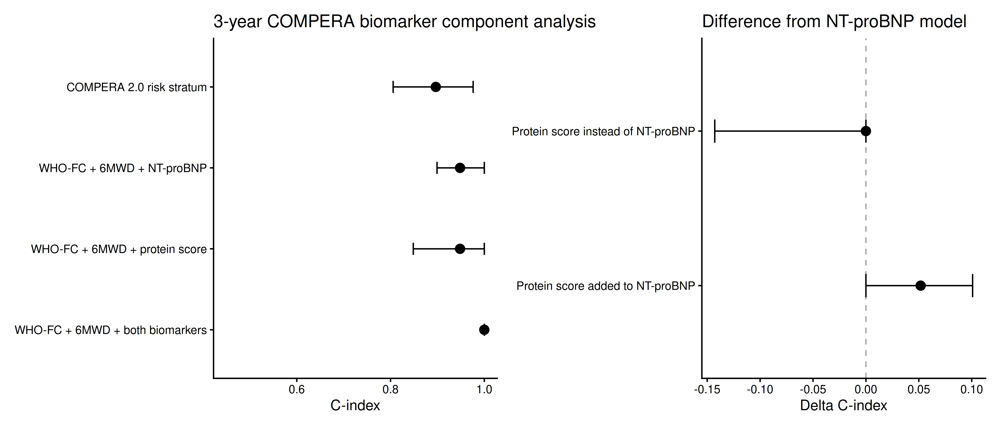
ggsave(
here::here(output_dir_figs, "Supplement_COMPERA_biomarker_component_analysis_3year.png"),
p_component_cindex_3y | p_component_delta_3y,
width = 10.5, height = 4.5, dpi = 300
)Save important objects
qs_save(list(
data_z = data_z, data_p = data_p, clin_z = clin_z, clin_p = clin_p,
DE_group_z = DE_group_z, DE_group_p = DE_group_p, DE_coupling_z = DE_coupling_z, DE_coupling_p = DE_coupling_p,
p_dev = p_dev, z_val = z_val, candidate_ranking_p = candidate_ranking_p, final_panel = final_panel,
candidate_proteins = candidate_proteins, final_panel_choice = final_panel_choice, stability50 = stability50,
panel_model = panel_model, pred_p_dev = pred_p_dev, pred_p_final = pred_p_final, pred_z_final = pred_z_final,
lasso_cv_summary = lasso_cv$summary, lasso_delta_summary = lasso_delta_summary, panel_auc = panel_auc, clinical_cor = clinical_cor,
df_surv_z_3y = df_surv_z_3y, survival_3y_summary = survival_3y_summary,
cox_table_3y = cox_table_3y, cindex_table_3y = cindex_table_3y, delta_cindex_table_3y = delta_cindex_table_3y,
lrt_score_added_3y = lrt_score_added_3y,
nt_cor_results = nt_cor_results, nt_auc_results = nt_auc_results, nt_delong_results = nt_delong_results,
component_models_3y = component_models_3y, component_cindex_ci_3y = component_cindex_ci_3y,
component_delta_3y = component_delta_3y,
lrt_add_protein_3y = lrt_add_protein_3y, lrt_add_ntprobnp_3y = lrt_add_ntprobnp_3y
), here::here(output_dir_data, "SSc_PAH_serum_proteomics_top50_k5_3year_main_objects.qs2"))
sessionInfo()R version 4.5.2 (2025-10-31)
Platform: x86_64-pc-linux-gnu
Running under: Ubuntu 24.04.3 LTS
Matrix products: default
BLAS: /usr/lib/x86_64-linux-gnu/openblas-pthread/libblas.so.3
LAPACK: /usr/lib/x86_64-linux-gnu/openblas-pthread/libopenblasp-r0.3.26.so; LAPACK version 3.12.0
locale:
[1] LC_CTYPE=en_US.UTF-8 LC_NUMERIC=C
[3] LC_TIME=en_US.UTF-8 LC_COLLATE=en_US.UTF-8
[5] LC_MONETARY=en_US.UTF-8 LC_MESSAGES=en_US.UTF-8
[7] LC_PAPER=en_US.UTF-8 LC_NAME=C
[9] LC_ADDRESS=C LC_TELEPHONE=C
[11] LC_MEASUREMENT=en_US.UTF-8 LC_IDENTIFICATION=C
time zone: Etc/UTC
tzcode source: system (glibc)
attached base packages:
[1] grid stats4 stats graphics grDevices datasets utils
[8] methods base
other attached packages:
[1] broom_1.0.11 survival_3.8-3
[3] pheatmap_1.0.13 pROC_1.19.0.1
[5] glmnet_4.1-10 Matrix_1.6-5
[7] EnhancedVolcano_1.29.1 ggrepel_0.9.6
[9] limma_3.66.0 SummarizedExperiment_1.40.0
[11] Biobase_2.70.0 GenomicRanges_1.62.0
[13] Seqinfo_1.0.0 IRanges_2.44.0
[15] S4Vectors_0.48.0 BiocGenerics_0.56.0
[17] generics_0.1.4 MatrixGenerics_1.22.0
[19] matrixStats_1.5.0 qs2_0.1.7
[21] patchwork_1.3.2 scales_1.4.0
[23] ggplot2_4.0.1 tibble_3.3.0
[25] tidyr_1.3.1 dplyr_1.1.4
[27] readxl_1.4.5 readr_2.1.6
[29] here_1.0.2
loaded via a namespace (and not attached):
[1] tidyselect_1.2.1 farver_2.1.2 S7_0.2.1
[4] fastmap_1.2.0 promises_1.5.0 stringfish_0.18.0
[7] digest_0.6.39 lifecycle_1.0.4 statmod_1.5.1
[10] magrittr_2.0.4 compiler_4.5.2 rlang_1.1.6
[13] sass_0.4.10 tools_4.5.2 utf8_1.2.6
[16] yaml_2.3.11 knitr_1.50 labeling_0.4.3
[19] S4Arrays_1.10.1 DelayedArray_0.36.0 RColorBrewer_1.1-3
[22] abind_1.4-8 workflowr_1.7.2 withr_3.0.2
[25] purrr_1.2.0 git2r_0.36.2 MASS_7.3-65
[28] iterators_1.0.14 cli_3.6.5 rmarkdown_2.30
[31] ragg_1.5.0 otel_0.2.0 RcppParallel_5.1.11-1
[34] rstudioapi_0.17.1 tzdb_0.5.0 cachem_1.1.0
[37] stringr_1.6.0 splines_4.5.2 BiocManager_1.30.27
[40] cellranger_1.1.0 XVector_0.50.0 vctrs_0.6.5
[43] jsonlite_2.0.0 hms_1.1.4 systemfonts_1.3.1
[46] foreach_1.5.2 jquerylib_0.1.4 glue_1.8.0
[49] codetools_0.2-20 stringi_1.8.7 gtable_0.3.6
[52] shape_1.4.6.1 later_1.4.4 pillar_1.11.1
[55] htmltools_0.5.9 R6_2.6.1 textshaping_1.0.4
[58] rprojroot_2.1.1 evaluate_1.0.5 lattice_0.22-7
[61] backports_1.5.0 renv_1.1.5 httpuv_1.6.16
[64] bslib_0.9.0 Rcpp_1.1.0 nlme_3.1-168
[67] SparseArray_1.10.4 mgcv_1.9-3 whisker_0.4.1
[70] xfun_0.56 fs_1.6.6 pkgconfig_2.0.3